Spatial transcriptomics
Solène Masserey, Andreas Agrafiotis, Alexanded Yermanos
2022-07-04
Source:vignettes/Spatial_transcriptomics.Rmd
Spatial_transcriptomics.Rmd1. Introduction
Spatial transcriptomics is a novel method to visualize and quantify gene expression profiles on tissue samples. It holds the potential to provide novel insight into our understanding of the spatial dynamics of the adaptive immune response. Platypus now offers a computational pipeline specifically tailored for spatial transcriptome data. This spatial transcriptomic module provides new functions to integrate GEX, VDJ, and spatial information into a single object. Some features include the ability to classify cells as B or T cells based on a list of markers, to re-cluster the annotated cells on the image, to integrate VDJ and spatial information, and to visualize repertoire features such as clonal expansion, isotype usage, somatic hypermutation directly on the image.
2. Dataset overview
This vignette is currently compatible with public data provided by 10X Genomics. The example data in this module is from spatial transcriptomics of a human lymph node given the high number of T and B cells and potential of including germinal centers. The majority of analyses in this vignette use Platypus v3, which revolves around the VDJ_GEX_matrix (VGM) data structure. This is used as input to the majority of downstream analysis functions. The vgm containing the VDJ and the GEX information corresponding to the following analysis can be directly download with the following link: https://storage.googleapis.com/platypus_private/masserey2022a_spatial_vgm.RData. As downloading public data can sometimes be complicated, the lymph node spatial data can be downloaded with the following link: https://storage.googleapis.com/platypus_private/masserey2022a_spatial_GEX.zip. We additionally demonstrate a way to to download and arrange the public dataset from 10X Genomics in the user’s computer.
The first step, data downloading, is to go to the dataset tab of the 10X Genomics website (add link) and select the dataset of interest - for example: “Human Lymph Node”. Then under “output files”, we have to download 1) “Feature / barcode matrix HDF5 (filtered)” file and rename it filtered_feature_bc_matrix.h5, 2)“Feature / barcode matrix (filtered)” file, decompress it to obtain three files: “barcode.tsv”, “features.tsv”, and “matrix.mtx”, 3) “Clustering analysis” file, decompress it to get a file named “analysis”, and 4) “Spatial imaging data”, decompress it to obtain a file named “spatial”.
3. Setup
Loading the necessary packages.
##
## Attaching package: 'dplyr'## The following objects are masked from 'package:stats':
##
## filter, lag## The following objects are masked from 'package:base':
##
## intersect, setdiff, setequal, union4. Addition of spatial component to VGM
To start, we first load the VGM into the R environment. We also need to provide access paths to add the spatial data to the VGM.
sample_names<-c("Human LN")
tissue_lowres_image_path<-list()
tissue_lowres_image_path[[1]]<-c("C:/Users/PlatypusDB/GEX/spatial/tissue_lowres_image.png")
scalefactors_json_path<-list()
scalefactors_json_path[[1]]<-c("C:/Users/PlatypusDB/GEX/spatial/scalefactors_json.json")
tissue_positions_list_path<-list()
tissue_positions_list_path[[1]]<-c("C:/Users/PlatypusDB/GEX/spatial/tissue_positions_list.csv")
cluster_path<-list()
cluster_path[[1]]<-c("C:/Users/PlatypusDB/GEX/clusteranalysis/analysis/clustering/graphclust/clusters.csv")
matrix_path<-list()
matrix_path[[1]]<-c("C:/Users/PlatypusDB/GEX/filtered_feature_bc_matrix/filtered_feature_bc_matrix.h5")
GEX.out.directory.list <- list()
GEX.out.directory.list[[1]] <- c("C:/Users/PlatypusDB/GEX/filtered_feature_bc_matrix/")
#vgm containing GEX and VDJ
load("C:/Users/PlatypusDB/masserey2022a_spatial_vgm.Rdata")Starting from the VGM containing both transcriptome and sequence data, we still need to add spatial data that will allow us to represent different features directly on the image.
vgm<-Spatial_vgm_formation(vgm = vgm,tissue_lowres_image_path = tissue_lowres_image_path,tissue_positions_list_path = tissue_positions_list_path, scalefactors_json_path = scalefactors_json_path, cluster_path = cluster_path, matrix_path = matrix_path)In order to represent both the transcriptome data (GEX) and the sequence data (VDJ) on an image we need to assign x and y coordinates to each cell (or each barcode). To do this, a matrix including both the barcodes and the coordinates can be extracted from the spatial data in the VGM[[6]] (spatial). To facilitate the spatial analyses, we will add the coordinates x and y directly to each cell/barcode in the data frame of the VGM[[1]] which contains the VDJ data.
#Extract coordinates
scaling_parameters<-Spatial_scaling_parameters(vgm_spatial = vgm, GEX.out.directory.list = GEX.out.directory.list, sample_names = sample_names)
coordinates<-subset(scaling_parameters[[10]], select = c(imagerow, imagecol,barcode))
names(coordinates)[1]<-"y"
names(coordinates)[2]<-"x"
#Add coordinates to VGM[[1]]
VDJ<-vgm$VDJ
VDJ$barcode<-gsub("s1_","",VDJ$barcode)
VDJ<-merge(VDJ, coordinates, by="barcode")
vgm$VDJ<-VDJ5. Analysis
Once the VGM contains the transcriptome, immune receptor and spatial location we can now proceed to additional analyses. We have divided the current analysis pipeline into two parts: 5.1 analysis of the immune receptor data (VDJ) and 5.2 analysis of the gene expression data (GEX). In this example we focus on B cells but the same analysis is compatible with T cells.
5.1 VDJ analysis
We will first focus on the analysis of BCR sequences of B cells present on the tissue. We have created three analysis functions. First, the user can choose to visualize repertoire features directly on the image. This includes features such as isotype usage or the number of somatic hypermutations. The user can also track the evolution of clones within a clonotype. All these functions are detailed below.
5.1.1 Isotype
This first analysis tool enables the visualization of B cell isotypes on the spatial image. The isotype data are collected in the VGM[[1]] (VDJ). This lymph node contains a large number of B cells and different clonotypes. For a better visualization of the results, we have chosen to display the 5 most expanded clonotypes. A function has also been created for this. This tool also works with the whole dataset by replacing the vgm_VDJ parameter as well as the analysis parameter by VGM[[1]].
#VDJ containing only the top 5 more expanded clones
top_5_VDJ_data<-Spatial_selection_expanded_clonotypes(nb_clonotype = 5, vgm_VDJ = vgm$VDJ)
#Isotypes plotting
Spatial_VDJ_plot(vgm_VDJ = top_5_VDJ_data, analysis = top_5_VDJ_data$VDJ_cgene, images_tibble = scaling_parameters[[5]], bcs_merge = scaling_parameters[[10]],sample_names = sample_names, title = "B cell", legend = "Isotype")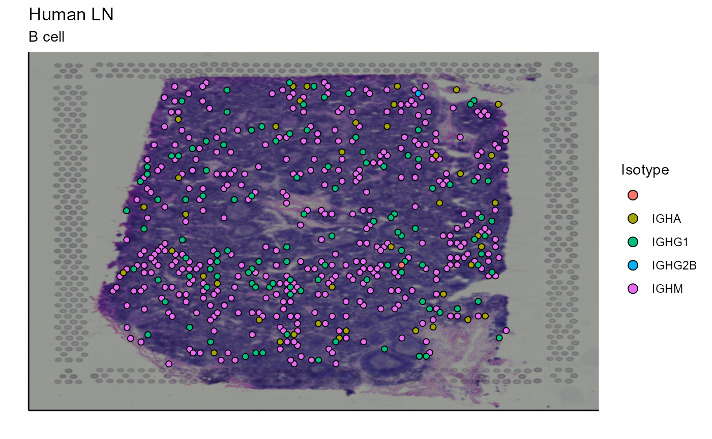
5.1.2 Somatic hypermutation (SHM) and clonotype evolution tracking
Somatic hypermutations refer to mutations in BCR/antibody sequence that diverges from the germline genes encoded within the genome. To define the germline sequence and to calculate and classify the sequences of each clone, we used the AntibodyForest function within Platypus that reconstructs phylogenetic networks based on inferred evolutionary histories. A node refers to a unique antibody variant within a given clone and the edges connect clonally related sequences. In our example, node 5 is empty, which means that no cell belonging to this clonotype has a germline sequence (CLARIFY). However, there are several other nodes containing cells with a calculated distance (number of SHM) from the germinal node. We will represent on the image the number of mutations for each cell that separates their sequence from the germline sequence.
#1)trees without intermediate
forest<-AntibodyForests(VDJ=vgm[[1]], network.algorithm='tree', expand.intermediates=F, network.level='intraclonal',parallel=F)We display a phylogenetic network as an example.
#Clonotype we study
clonotype_number<-names(forest[[1]][2])
clonotype_number## [1] "clonotype10"
#plot
tree_plot<-forest[[1]][[2]] %>% AntibodyForests_plot(node.label = "rank")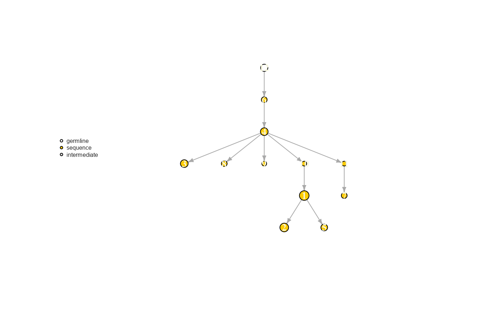
igraph::plot.igraph(tree_plot@plot_ready)We display a tree corresponding to clonotype 10. This tree is composed of 5 nodes, each of which has a different node label. This number has nothing to do with the number of cells in a node (CLARIFY). Node 5 is, for example, the germline node and contains no cells. The node whose sequences are closest to the germline node is node 4. From this node two inferred descendants follow: the first with node 1 and the second with node 3. The sequences contained in node 2 are “closer” to those contained in node 1. One could summarize by saying that node 4 contains the cells that first evolved from the germline, that nodes 3 and 1 contain the cells that evolved from the cells of node 4 and that finally the cells belonging to node 2 evolved from those of node 1. Data frame (CLARIFY) containing the previous described information like node relations (tree_pathway) and distance between node and germline sequence (vertices_dataframe) can be extracted from output of AntibodyForest function.
The new VDJ data frame now contains node labels and the distances from germline for all cell with each clonotype. We can plot this information.
Spatial_nb_SHM_compare_to_germline_plot(simulation = FALSE,AbForest_output=tree_plot@plot_ready, vgm_VDJ = vgm$VDJ, images_tibble = scaling_parameters[[5]],bcs_merge = scaling_parameters[[10]],sample_names = sample_names,title = "Number of SHM of clonotype 10", legend_title = "nb of SHM")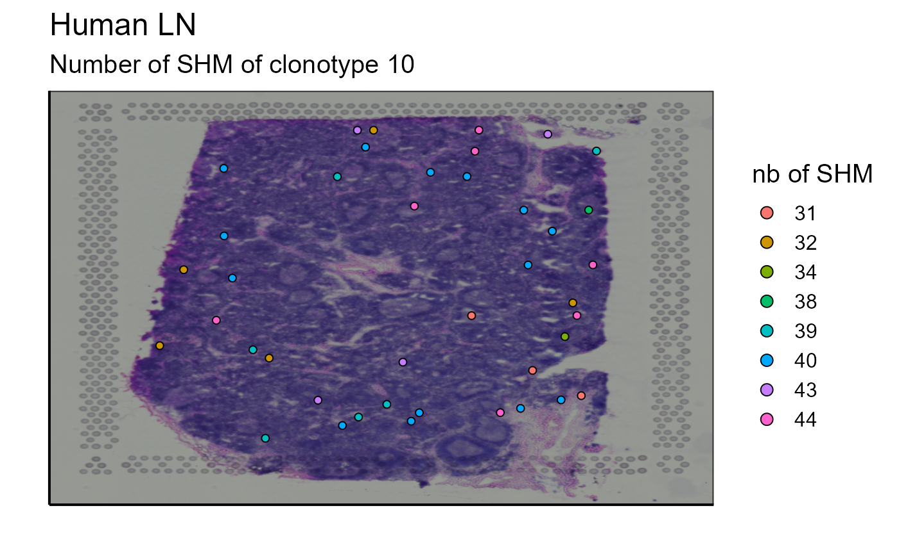
As we infer the relationships between the nodes, we can connect the cells with arrows to represent these relationships on the image. The arrow starts from a progenitor cell (located in a node closer to the germline node) and points to a offspring cell (which has evolved and therefore has additional SHMs and is located in a node further from the germline node). In this case, we will link the cells of node 1 to the cells of node 2 and the cells of node 4 to the cells of nodes 1 and 3. Node 5 does not come into play because it is empty (CLARIFY - what does empty mean?). To link these cells, we have two possibilities. First, we can link a progenitor cell to a offspring cell (example: cell from node 1 to cell from node 2) based on their distance, the progenitor cell closest to a offspring cell is assigned to it. Or, secondly, we can link all progenitor cells to all their potential offspring cells.
#Daughter cell assign to the closest mother cell
Spatial_evolution_of_clonotype_plot(simulation = FALSE,tracking_type = "closest",AbForest_output = tree_plot@plot_ready,VDJ=vgm$VDJ, sample_names = sample_names, images_tibble = scaling_parameters[[5]], bcs_merge = scaling_parameters[[10]], title = "Tracking evolution of clonotype 10", legend_title = "nb of SHM" )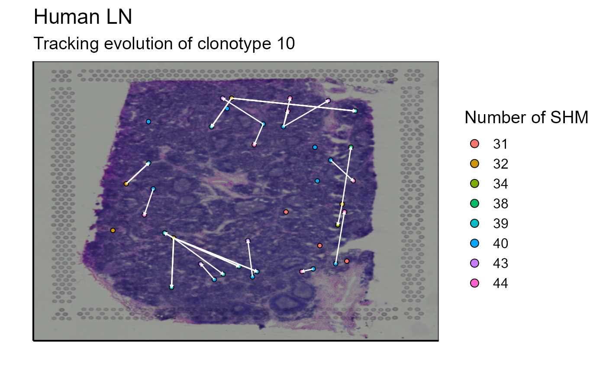
#All mother cells link all daughter cells
Spatial_evolution_of_clonotype_plot(simulation = FALSE,tracking_type = "all",AbForest_output = tree_plot@plot_ready,VDJ=vgm$VDJ, sample_names = sample_names, images_tibble = scaling_parameters[[5]], bcs_merge = scaling_parameters[[10]], title = "Tracking evolution of clonotype 10", legend_title = "nb of SHM" )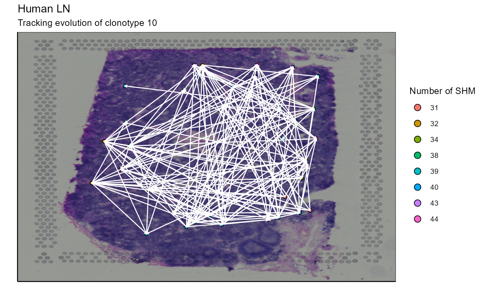
5.2 GEX analysis
We now proceed to the analyses concerning the gene expression (GEX) of the cells on the tissue. The user can visualize a cell type on the tissue by entering custom phenotypic labels (e.g. from ProjectTILS or the Platypus GEX_phenotype function). They can also display the expression of a gene or a gene module. Finally, it is also possible to recluster the cells according to their cell type. The first thing to do is to define a cell type of interest. We selected B and T cells in this vignette to remain consistent with the previous repertoire analysis. A column “cell.state” will be added to the VGM[[2]] data (GEX).
#Function to directly add the celltype.
celltype_GEX_assignment<-function(vgm, cell_names, cell_markers){
vgm$GEX<-GEX_phenotype(vgm$GEX, cell.state.names = cell_names, cell.state.markers = cell_markers, default = FALSE)
}
#Assignment of T and B cell type to vgm containing only GEX under cell.state.
vgm$GEX<-celltype_GEX_assignment(vgm=vgm, cell_names = c("T","B"), cell_markers = c("CD3E+;CD4+;CD8A+","CD19+;SDC1+;XBP1+"))5.2.1 Celltype plotting and density
After assigning cell types, they can be plotted together or separately. The cell density of each type on the image can also be calculated. In our example we choose to represent B cells as well as T cells. The cells are detected by markers present in their transcriptome (for B cells: CD19, SDC1, and XBP1 and for T cells: CD3E, CD4, and CD8A). We also represent the density of each cell type on the spatial image to get an idea of their distribution on the sample.
#B and T cells plotting on the same graph
Spatial_celltype_plot(bcs_merge = scaling_parameters[[10]],vgm_GEX = vgm$GEX@meta.data,images_tibble = scaling_parameters[[5]],sample_names = sample_names,title="B and T celltype", legend_title = "Celltype")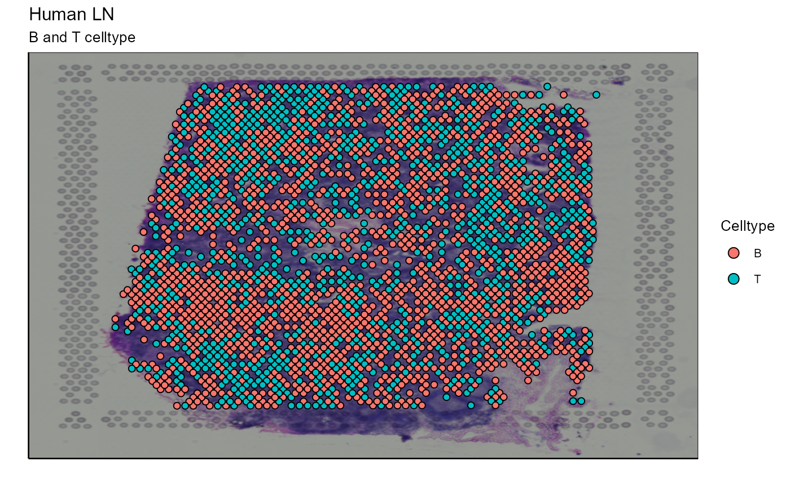
#B cells plotting alone
B_celltype<-Spatial_celltype_plot(bcs_merge = scaling_parameters[[10]],vgm_GEX = vgm$GEX@meta.data,images_tibble = scaling_parameters[[5]],sample_names = sample_names,title="B celltype", legend_title = "Celltype", specific_celltype = "B", density = TRUE)
B_celltype[[1]]
#B cells density plotting
B_celltype[[2]]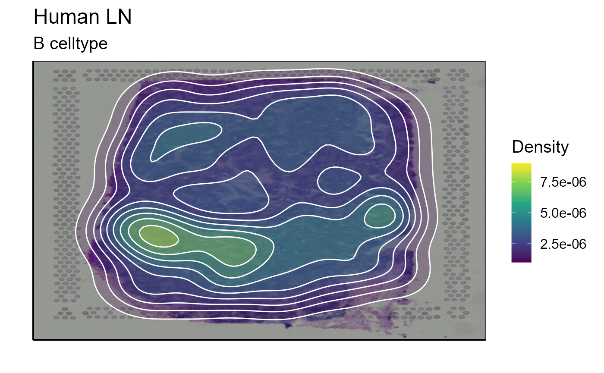
#T cells plotting alone
T_celltype<-Spatial_celltype_plot(bcs_merge = scaling_parameters[[10]],vgm_GEX = vgm$GEX@meta.data,images_tibble = scaling_parameters[[5]],sample_names = sample_names,title="T celltype", legend_title = "Celltype", specific_celltype = "T", density = TRUE)
T_celltype[[1]]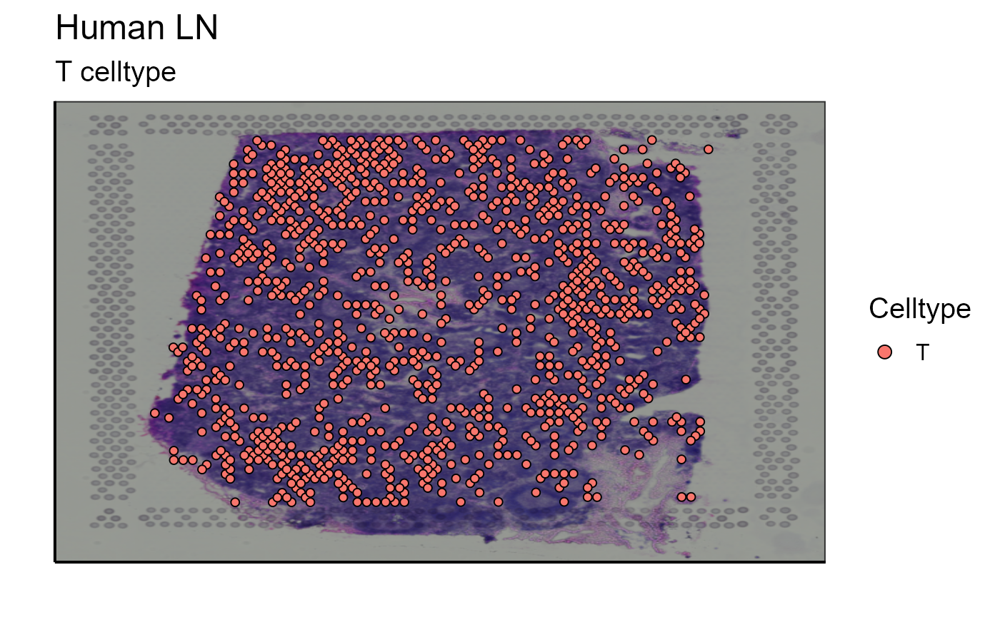
#T cells density
T_celltype[[2]]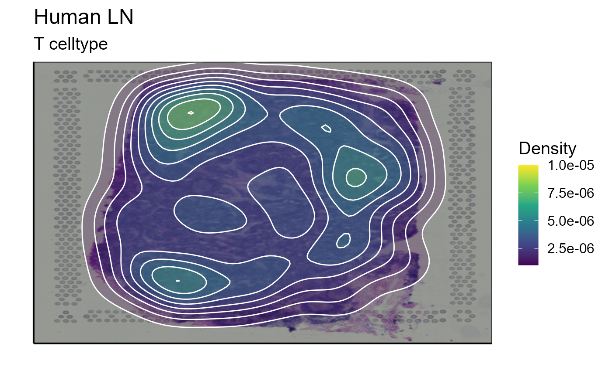
5.2.2 Single gene expression
An important feature of spatial analysis is the ability to visualize the expression of a gene/marker on the tissue sample. We can choose to express this marker according to its expression level or we can set a threshold above which the marker must be expressed to be plotted. For our example we will choose a marker present in B lymphocytes: CD19.
#Without a threshold
p_spatial_marker_expression_without_threshold<-Spatial_marker_expression(matrix=scaling_parameters[[9]], marker="CD19",bcs_merge=scaling_parameters[[10]],images_tibble=scaling_parameters[[5]],GEX_barcode=vgm$VDJ$barcode,sample_names=sample_names, title = "Single gene expression", threshold = "No")## New names:
## • `` -> `...13`
p_spatial_marker_expression_without_threshold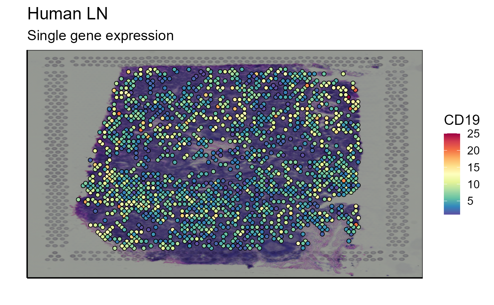
#With a threshold
p_spatial_marker_expression_with_threshold<-Spatial_marker_expression(matrix=scaling_parameters[[9]], marker="CD19",bcs_merge=scaling_parameters[[10]],images_tibble=scaling_parameters[[5]],GEX_barcode=vgm$VDJ$barcode,sample_names=sample_names, title = "Single gene expression", threshold = 5)## New names:
## • `` -> `...13`
p_spatial_marker_expression_with_threshold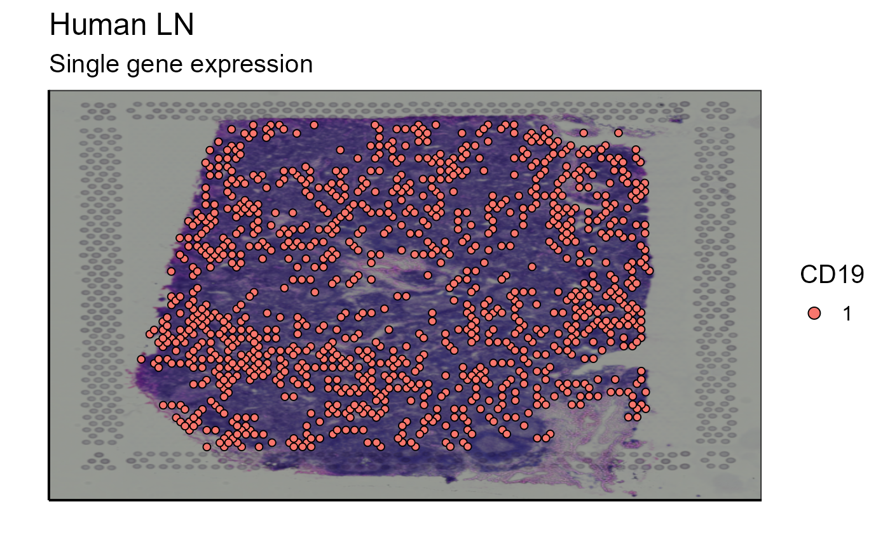
5.2.3 Gene module expression
The visualization of a single marker is often not sufficient to answer immunological questions within a tissue. Another tool concerning gene expression is a function allowing to visualize the expression of a gene module that can be defined by the user. Again, to stay in the theme of immune cells, we choose to analyze the list of markers used to detect B cells in the transcriptome: CD19, XBP1, and SDC1.
As for gene expression, the user can choose to add a threshold or not to visualize the expression of the gene module.
#Without a threshold
Spatial_module_expression(sample_names = sample_names,gene.set = gene.set, GEX.out.directory.list = GEX.out.directory.list[[1]],bcs_merge = scaling_parameters[[10]],images_tibble = scaling_parameters[[5]], threshold = "No", title = "Gene module visualization", legend_title = "CD19, XBP1 and SDC1")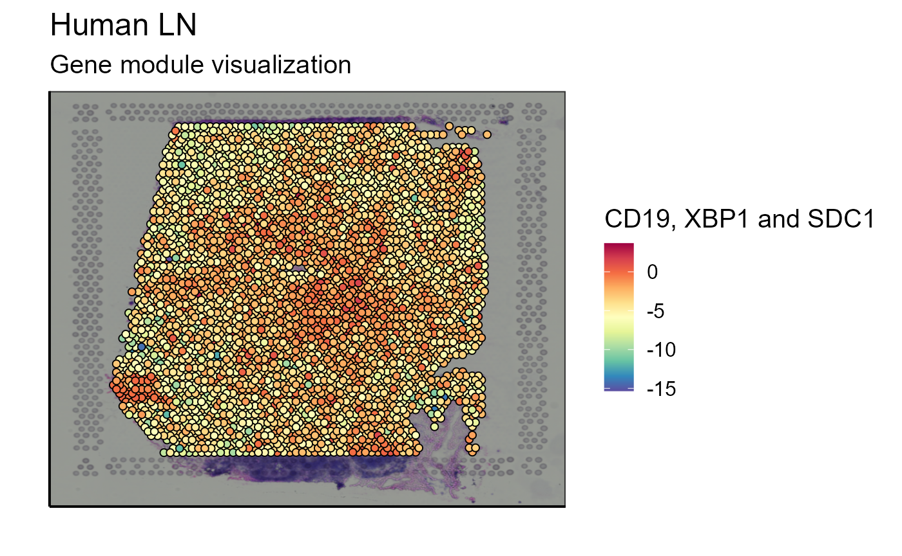
#With a threshold
Spatial_module_expression(sample_names = sample_names,gene.set = gene.set, GEX.out.directory.list = GEX.out.directory.list[[1]],bcs_merge = scaling_parameters[[10]],images_tibble = scaling_parameters[[5]], threshold = 1,title = "Gene module visualization", legend_title = "CD19, XBP1 and SDC1")
5.2.4 Clustering
Clustering of cells based on their gene expression is already proposed by 10X Genomics. However, this classification takes into account the GEX data of the whole tissue sample. We have implemented a function capable of reclustering the cells according to a subset. This can be useful to recluster only the B cells detected on the image to further investigate B cell heterogeneity. With a single function call the user can modify the cluster resolution parameter to represent the cluster previously defined by 10X genomics (cluster = “GEX_cluster”) or to recluster the cells according to a subtype (cluster = “reclustering”). Again, this function does not only work for B cells but also for any other cell type or any other subgroup of cells. For a better visualization, we also propose an image containing only the 5 most expanded clonotypes.
#Old GEX clusters given by 10X
GEX_cluster_B_cells<-Spatial_cluster(cluster = "GEX_cluster", vgm_cluster = vgm$spatial$cluster[[1]], vgm_VDJ = vgm$VDJ, GEX.out.directory.list = GEX.out.directory.list[[1]],images_tibble=scaling_parameters[[5]],bcs_merge=scaling_parameters[[10]], title = "B cells", sample_names = sample_names, legend_title = "GEX clusters" )
p_spatial_B_cells_GEX_cluster<-GEX_cluster_B_cells[[1]]
p_spatial_B_cells_GEX_cluster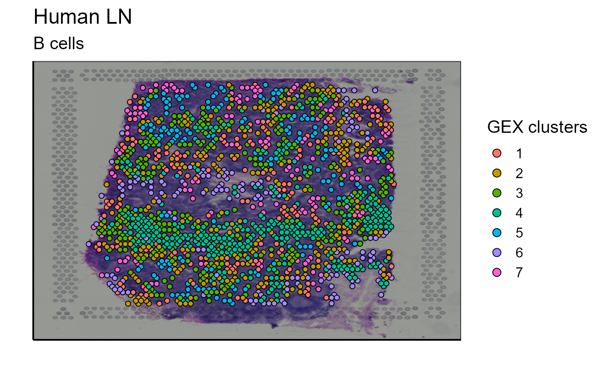
#Reclustering with only B cells
reclustering_B_cells<-Spatial_cluster(cluster = "reclustering", vgm_VDJ = vgm$VDJ, GEX.out.directory.list = GEX.out.directory.list[[1]],images_tibble=scaling_parameters[[5]],bcs_merge=scaling_parameters[[10]], title = "B cells", sample_names = sample_names, legend_title = "Reclustering")## Centering and scaling data matrix## PC_ 1
## Positive: HMGN2, CR2, CLU, HMGB2, ELL3, PFN1, SERPINE2, RGS13, ACTG1, FDCSP
## SERF2, TUBA1B, TUBB, STMN1, SERPINA9, LRMP, MEF2B, FCAMR, H3F3A, HMGB1
## H2AFZ, HMGN1, MARCKSL1, PPIA, HMCES, CFL1, PTTG1, VPREB3, RFTN1, SUGCT
## Negative: IGKC, IGHG1, IGHG4, IGHG2, IGHG3, CCL2, IGLC2, IGHA1, SSR4, C7
## XBP1, IGHGP, NR4A1, C1QA, CCL21, CST3, IGLC1, JCHAIN, SOCS3, THBS1
## C11orf96, IGLC3, CCN1, DUSP1, GAS6, HSP90B1, CXCL12, STAB1, EGFL7, IFITM3
## PC_ 2
## Positive: TRAC, TRBC2, TRBC1, TCF7, LINC00861, LDLRAP1, IL7R, CD3E, CCL21, LAT
## CD6, ZAP70, TNFRSF25, CCR7, CD3D, CD247, CHRM3-AS2, LEF1, GIMAP7, PIK3IP1
## XBP1, AQP3, ITK, IL32, CD5, PRKCQ-AS1, MZB1, GIMAP5, CD2, PIM2
## Negative: VIM, IGFBP7, SERPINE1, CCL20, TIMP1, CEMIP, CHI3L1, SOD2, TNC, THY1
## TIMP3, CLDN5, THBD, CSF2RB, STAB1, CXCL5, MT-CO1, PTGDS, SPARC, GRN
## CXCL2, FUCA1, MARCKS, IGFBP4, PDLIM1, LMNA, LYZ, TFPI, FN1, MT-CO2
## PC_ 3
## Positive: TRBC2, TRBC1, CCL19, TRAC, IL32, CCR7, IL7R, TCF7, LAMP3, CD3D
## CD7, C3, STAT1, CCL21, CD6, GIMAP7, PIK3IP1, IFITM1, CD247, LINC00861
## CD2, CD3E, LAT, CXCL9, SPOCK2, LEF1, CTLA4, GIMAP5, RGS1, FSCN1
## Negative: IGHG4, IGKC, IGHG1, IGLC2, MZB1, IGHG3, IGHG2, IGHGP, IGLC1, JCHAIN
## XBP1, IGLC3, SSR4, IGHM, BTG2, TXNDC5, DERL3, TENT5C, HERPUD1, POU2AF1
## GAS6, TCL1A, IGHA1, CXCL12, FKBP11, SEL1L3, CD79A, PRDX4, AC012236.1, SOCS3
## PC_ 4
## Positive: CXCL13, MS4A1, FDCSP, FCER2, CD79A, CD22, TNFRSF13C, BANK1, IGHD, HLA-DQA1
## CD79B, CD83, CR2, VPREB3, TLR10, CXCR5, SELE, CCL20, CD1C, LTF
## MT-ND4, SPIB, FCRLA, CD24, PAX5, SMIM14, MT-ATP6, MT-CYB, MT-ND1, C3
## Negative: C1QB, C1QC, CST3, CCL21, SELENOP, C1QA, CCL2, CCL14, SLC40A1, CEBPD
## LGMN, JCHAIN, TUBA1B, SIGLEC1, APOE, CD209, RRM2, CXCL12, S100A10, GAPDH
## SDC3, CCL18, TYROBP, FCER1G, HSP90B1, CCN1, PLK1, UBE2S, MS4A6A, IL7R
## PC_ 5
## Positive: SFRP2, MYL9, CNN1, ACTA2, ACTG2, FBLN1, TAGLN, MYH11, CCDC80, MGP
## SFRP4, SFRP1, DES, ADIRF, SOD3, APOD, HSPB6, MT-ND3, MT-CYB, BGN
## COL1A2, MT-ATP6, MUSTN1, WFDC1, MT-CO3, FLNC, COL1A1, MT-ND4, CAVIN3, PLA2G2A
## Negative: CLEC4M, CEMIP, MARCO, CD209, CLEC4G, SIGLEC1, MMP9, ICAM1, SOD2, LYVE1
## LYZ, IL1B, EGFL7, CETP, IFI30, STAB1, LPL, STAB2, APOE, PLAUR
## CCL14, LGMN, NR1H3, CFP, NAMPT, GZMB, NCEH1, ADAMTS4, CSF1R, SPHK1## Computing nearest neighbor graph## Computing SNN## Modularity Optimizer version 1.3.0 by Ludo Waltman and Nees Jan van Eck
##
## Number of nodes: 1645
## Number of edges: 53909
##
## Running Louvain algorithm...
## Maximum modularity in 10 random starts: 0.7298
## Number of communities: 11
## Elapsed time: 0 seconds
p_spatial_B_cells_new_cluster<-reclustering_B_cells[[1]]
p_spatial_B_cells_new_cluster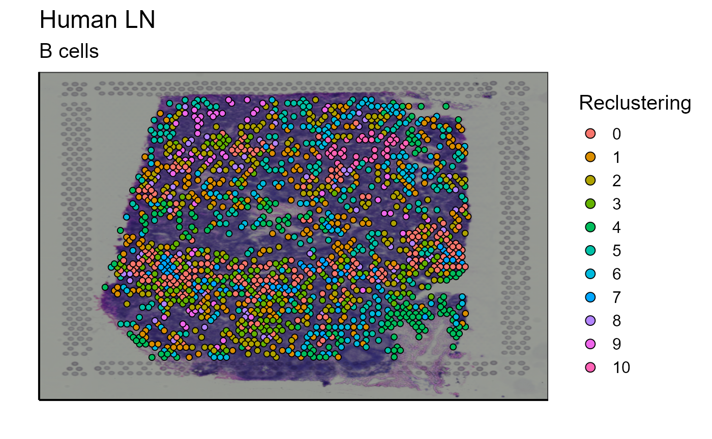
#Reclustering of the top 5 more expanded clones
top_5_VDJ_data<-Spatial_selection_expanded_clonotypes(nb_clonotype = 10, vgm_VDJ = vgm$VDJ)
a<-select(top_5_VDJ_data, orig_barcode, x, y)
b<-select(reclustering_B_cells[[2]], Cluster, orig_barcode)
top_5_VDJ_data_cluster<-merge(a,b, by = "orig_barcode")
p_spatial_B_cells_new_cluster_top_5_clonotype<-Spatial_VDJ_plot(vgm_VDJ = top_5_VDJ_data_cluster,analysis = top_5_VDJ_data_cluster$Cluster, images_tibble = scaling_parameters[[5]], bcs_merge = scaling_parameters[[10]],sample_names = sample_names, title = "B cell density assignment", legend = "Reclustering")
p_spatial_B_cells_new_cluster_top_5_clonotype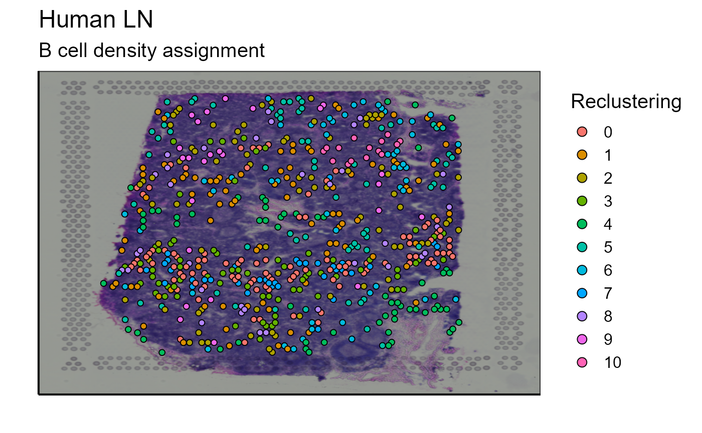
6. Interactive plotting
6.1 Cell selection
So far we have studied cells selected according to their transcriptome (e.g. according to their cluster), or according to their VDJ (e.g. according to their clonotypes or isotypes) and displayed them on the image. The next idea is to reverse the process by first manually selecting an area of interest and then extracting the corresponding cells and corresponding information. We can use the VDJ repertoire to run the Spatial_selection_of_cells_on_image function. This function allows us to select several areas directly with the computer mouse and extract cells within this region of interest. It creates a spatial image of the tissue on which the user can directly interact with by selecting points with the computer mouse. These points will be connected to form a polygon. This action can be repeated several times to select different areas of the same tissue. The cells inside the different polygons will then be extracted. The function will return, if plotting parameter is TRUE, a plot of the selected groups and in addition to a data frame containing all the sequence information of selected cells and their location on the sample. If the plotting parameter is set to FALSE, the function only returned the data frame of selected cells. The following code will run directly in an RMD file but it can be copied and pasted on an RData file.
#Example of code
selected_cells<-Spatial_selection_of_cells_on_image(vgm_VDJ = vgm$VDJ,images_tibble = scaling_parameters[[5]],bcs_merge = scaling_parameters[[10]],sample_names = sample_names,plotting = TRUE)6.2 Analysis
Based on the output data frame returned from the previous function (section 7.1) we can use the same analysis tools as presented before. Clonotypes, clustering and reclustering of cells, isotypes, or number of somatic hypermutations can be plotted on the spatial image. The first step is to filter the VDJ data to extract only data corresponding to selected cells.
#Example of code for cell filtering
BCR_selected<-filter(selected_cells[[2]], selection_group != 0)
#Example of code for selection group plotting
p_spatial_BCR_selected<-Spatial_VDJ_plot(vgm_VDJ = BCR_selected, analysis = BCR_selected$selection_group, images_tibble = scaling_parameters[[5]], bcs_merge = scaling_parameters[[10]],sample_names = sample_names, title = "B cell", legend = "Selection group")
p_spatial_BCR_selected
#Example of code for clonotypes plotting
p_spatial_BCR_selected_clonotypes<-Spatial_VDJ_plot(vgm_VDJ = BCR_selected, analysis = BCR_selected$clonotype_id, images_tibble = scaling_parameters[[5]], bcs_merge = scaling_parameters[[10]],sample_names = sample_names, title = "B cell", legend = "Clonotype")
p_spatial_BCR_selected_clonotypes
#Example of code for isotypes plotting
p_spatial_BCR_selected_isotypes<-Spatial_VDJ_plot(vgm_VDJ = BCR_selected, analysis = BCR_selected$VDJ_cgene, images_tibble = scaling_parameters[[5]], bcs_merge = scaling_parameters[[10]],sample_names = sample_names, title = "B cell", legend = "Isotype")
p_spatial_BCR_selected_isotypes
#Example of code for SHM and clonotype tracking
#1)trees without intermediate
forest<-AntibodyForests(VDJ=BCR_selected, network.algorithm='tree', expand.intermediates=F, network.level='intraclonal',parallel=F)
#Clonotype we study
clonotype_number<-names(forest[[1]][2])
clonotype_number
#plot
tree_plot<-forest[[1]][[2]] %>% AntibodyForests_plot(node.label = "rank")
igraph::plot.igraph(tree_plot@plot_ready)
Spatial_nb_SHM_compare_to_germline_plot(simulation = FALSE,AbForest_output=tree_plot@plot_ready, vgm_VDJ = BCR_selected, images_tibble = scaling_parameters[[5]],bcs_merge = scaling_parameters[[10]],sample_names = sample_names,title = "Number of SHM of clonotype 10", legend_title = "nb of SHM")
#Daughter cell assign to the closest mother cell
Spatial_evolution_of_clonotype_plot(simulation = FALSE,tracking_type = "closest",AbForest_output = tree_plot@plot_ready,VDJ=BCR_selected, sample_names = sample_names, images_tibble = scaling_parameters[[5]], bcs_merge = scaling_parameters[[10]], title = "Tracking evolution of clonotype 10", legend_title = "nb of SHM" )
#All mother cells link all daughter cells
Spatial_evolution_of_clonotype_plot(simulation = FALSE,tracking_type = "all",AbForest_output = tree_plot@plot_ready,VDJ=BCR_selected, sample_names = sample_names, images_tibble = scaling_parameters[[5]], bcs_merge = scaling_parameters[[10]], title = "Tracking evolution of clonotype 10", legend_title = "nb of SHM" )7. Echidna simulation of the VDJ
Often VDJ data is not available for spatial transcriptomic datasets. If VDJ.out.directory.list corresponding to immune receptor data is missing, we have integrated a simulation framework, called Echidna, to simulate the VDJ sequences of BCR or TCR according to the number of B or T cells detected on the image. If VDJ repertoire is not given, VDJ.out.directory.list can be set to “NULL”. First, we give the path to the spatial files and we set up the needed libraries.
We can then run the VDJ_GEX_matrix function to form a VGM containing only transcriptome information.
#VGM without VDJ
vgm_with_transcriptome_only<- VDJ_GEX_matrix(GEX.out.directory.list = GEX.out.directory.list,
exclude.on.cell.state.markers = c("no filtering"),
group.id = c("Human Lymph Node"))## 09:15:36
## Loading in data## 09:16:02 Loaded GEX data##
## For sample 1: 4035 cell assigned barcodes in GEX##
## In GEX sample 1 failed to exclude cells based on: NO FILTERING Please check gene spelling##
## Starting GEX pipeline## Centering and scaling data matrix## PC_ 1
## Positive: CR2, HMGN2, ELL3, RGS13, SERPINE2, MEF2B, HMGB2, FDCSP, CLU, FCAMR
## LRMP, STMN1, SERPINA9, HMCES, HMGN1, MARCKSL1, VPREB3, H2AFZ, SUGCT, HMGB1
## TUBA1B, MYBL1, TUBB, TCL1A, CDCA7, RFTN1, H3F3A, EZR, PTTG1, SERF2
## Negative: CCL21, CCL2, CST3, IGFBP7, NR4A1, IFITM3, C1QA, C7, DUSP1, CCN1
## THBS1, CCL19, C11ORF96, C1QB, SOD2, EGFL7, STAB1, ZFP36, CEBPD, SOCS3
## C1R, C1QC, CLDN5, NNMT, TIMP3, TAGLN, TNC, SERPING1, PECAM1, CEMIP
## PC_ 2
## Positive: CD74, HLA-DRA, TIMP3, CEMIP, IGFBP7, SERPINE1, CLDN5, STAB1, PSAP, EGFL7
## VIM, TIMP1, TNC, LYZ, SOD2, MARCO, CCL20, CD79A, CLEC4M, DUSP1
## IGFBP4, CTSD, SPARC, CHI3L1, PTGDS, GRN, MS4A1, TFPI, IFITM3, PRCP
## Negative: TCF7, CCR7, CD6, CD3E, CD247, IL7R, GIMAP7, CD3D, LEF1, LINC00861
## LAT, ZAP70, PIK3IP1, CHRM3-AS2, DGKA, LDLRAP1, CD2, PRKCQ-AS1, CD7, CD3G
## TNFRSF25, IL32, BCL11B, CD5, GIMAP5, ITK, CTLA4, SPOCK2, MAL, GIMAP1
## PC_ 3
## Positive: CCL21, C1QB, IL7R, CCL19, CCL2, C1QC, LINC00861, LDLRAP1, CEBPD, GAPDH
## TCF7, SLC40A1, CD247, TXNDC5, CD3D, CD3E, TUBA1B, C1QA, CST3, TNFRSF25
## XBP1, CXCL9, CD6, LEF1, MZB1, LAT, PIM2, ZAP70, HSP90B1, SELENOP
## Negative: CXCL13, FDCSP, CD74, MS4A1, HLA-DRA, FCER2, HLA-DQA1, BANK1, TNFRSF13C, CD19
## CCL20, CD22, CD79A, SELE, MT-CO2, VPREB3, LINC00926, MT-CO3, MT-CO1, CR2
## CD79B, LTF, CR1, MT-ND1, MT-ND4, CD24, TLR10, CHI3L1, SMIM14, CD1C
## PC_ 4
## Positive: TMSB4X, CCL20, STAT1, IFIT1, ISG15, LAMP3, IFI6, IFIT3, ITGAX, MX1
## OAS3, FSCN1, IFI44L, CXCL5, CHI3L1, EPSTI1, IFI44, VIM, FUCA1, PLA2G2D
## CSF2RB, UBD, SOD2, ATOX1, ENPP2, RSAD2, DNASE1L3, OAS1, MX2, CXCL10
## Negative: MZB1, XBP1, BTG2, CXCL12, SSR4, TXNDC5, RNASE1, GAS6, DERL3, MYL9
## SDC1, A2M, GPX3, ADIRF, IGFBP5, MYH11, ACTA2, TAGLN, ACTG2, CNN1
## SLIT3, DPEP1, TENT5C, FBLN1, CCL14, FKBP11, APOD, SFRP2, AQP1, SPARCL1
## PC_ 5
## Positive: SIGLEC1, CD209, CLEC4M, CLEC4G, LINC00926, XBP1, MZB1, LYVE1, MARCO, BTG2
## CXCL12, CCL14, STAB2, GZMB, DERL3, HERPUD1, TXNDC5, HSP90B1, CEMIP, PIM2
## SLAMF7, TCL1A, CCL2, ICAM1, POU2AF1, FCER2, CD22, CD19, CETP, CD74
## Negative: MT-CO3, MT-CYB, MYH11, ACTG2, MT-ND3, MT-ATP6, CNN1, MT-CO2, MYL9, ACTA2
## ADIRF, MT-CO1, SOD3, SFRP2, MT-ND1, COL1A2, MT-ND4, MGP, MT-ND2, CCDC80
## DES, MUSTN1, FBLN1, WFDC1, BGN, COL1A1, TAGLN, C3, SULF1, CCL19## Computing nearest neighbor graph## Computing SNN## Modularity Optimizer version 1.3.0 by Ludo Waltman and Nees Jan van Eck
##
## Number of nodes: 4035
## Number of edges: 134810
##
## Running Louvain algorithm...
## Maximum modularity in 10 random starts: 0.8360
## Number of communities: 8
## Elapsed time: 0 seconds## Warning: The default method for RunUMAP has changed from calling Python UMAP via reticulate to the R-native UWOT using the cosine metric
## To use Python UMAP via reticulate, set umap.method to 'umap-learn' and metric to 'correlation'
## This message will be shown once per session## 09:16:46 UMAP embedding parameters a = 0.9922 b = 1.112## 09:16:46 Read 4035 rows and found 10 numeric columns## 09:16:46 Using Annoy for neighbor search, n_neighbors = 30## 09:16:46 Building Annoy index with metric = cosine, n_trees = 50## 0% 10 20 30 40 50 60 70 80 90 100%## [----|----|----|----|----|----|----|----|----|----|## **************************************************|
## 09:16:47 Writing NN index file to temp file C:\Users\vickr\AppData\Local\Temp\RtmpS8QzWs\file6dd46b9044b6
## 09:16:47 Searching Annoy index using 1 thread, search_k = 3000
## 09:16:48 Annoy recall = 100%
## 09:16:49 Commencing smooth kNN distance calibration using 1 thread
## 09:16:51 Initializing from normalized Laplacian + noise
## 09:16:51 Commencing optimization for 500 epochs, with 166522 positive edges
## 09:17:04 Optimization finished
## 09:17:04 Calculating TSNE embedding
## 09:17:23 Done with GEX pipeline
## Adding runtime params
## 09:17:24 Done!
## 2022-08-18 09:17:24To simulate the correct number of BCRs or TCRs we need to know how many B or T cell are found in the dataset. With a list of chosen markers for T (CD3E+, CD4+, CD8A+) and B (CD19+, SDC1+, XBP1+) cells, we classified lymphocytes based on their transcriptome. If a cell expresses the three genes, they will be classified as either a T or B cell. The user can of course define their own markers according to their own cell type by using the GEX_phenotype function. After cell type assignment, it is possible to count the number of cells of each type to know how many BCR or TCR the user has to simulate.
#Function to directly add the celltype.
celltype_GEX_assignment<-function(vgm, cell_names, cell_markers){
vgm$GEX<-GEX_phenotype(vgm$GEX, cell.state.names = cell_names, cell.state.markers = cell_markers, default = FALSE)
}
#Assignment of T and B cell type to vgm containing only GEX under cell.state.
vgm_with_transcriptome_only$GEX<-celltype_GEX_assignment(vgm=vgm_with_transcriptome_only, cell_names = c("T","B"), cell_markers = c("CD3E+;CD4+;CD8A+","CD19+;SDC1+;XBP1+"))
#Function
count_nb_of_cell<-function(vgm, celltype){
nb<-0
for (i in 1:length(vgm$GEX$cell.state)){
if (vgm$GEX$cell.state[[i]]==celltype){
nb=nb+1
}
}
return(nb)
}
#Number of B cells
nb_B_cell<-count_nb_of_cell(vgm = vgm_with_transcriptome_only, celltype = "B")
nb_B_cell## [1] 1645
#Number of T cells
nb_T_cell<-count_nb_of_cell(vgm=vgm_with_transcriptome_only, celltype = "T")
nb_T_cell## [1] 11197.1 BCRs simulation
As the number of B and T cells is known, we simulate the corresponding number of BCRs or TCRs. The WriteFasta function is necessary to save data locally in the fasta format. We decided to simulate B cell receptor sequences but the same can be done for TCRs by setting the cell.type parameter to “T” and max.cell.number as well as max.clonotype.number to number of T cells in the simulate_repertoire function. First, we need to simulate the number of B-cell receptors (VDJ) corresponding to the number of B cells detected on the image based on our provided vector of genes. The user has to locally save four main files corresponding to the VDJ data that can be then integrated to the VGM. To simplify the path to the folder, we propose to group the locally downloaded sub-files in a file named VDJ_simulated but it works for any name as long as the folder contains all four of the necessary files. The path should be given in VDJ.out.directory.list instead of “NULL”. The last step is to re-run the whole VGM function call at the same time including the transcriptome and immune receptor sequence information.
#Simulation with Echidna
simulated_B_cells_VDJ<-Echidna_simulate_repertoire(initial.size.of.repertoire = 50,
species = "hum",
cell.type = "B",
duration.of.evolution = 30,
vdj.branch.prob = 0,
cell.division.prob = c(0.2,0.2,0.5),
max.cell.number = nb_B_cell,
max.clonotype.number = nb_B_cell,
complete.duration=T,
clonal.selection =T,
class.switch.independent=F,
transcriptome.on = T,
death.rate = 0,
igraph.on = T,
SHM.isotype.dependent = T,
SHM.nuc.prob = 0.00001,
sequence.selection.prob = 0.5,
transcriptome.switch.selection.dependent = T,
class.switch.selection.dependent = T
)
#Some modifications to use the simulation as an input for the vgm function
all_contig_annotations<-as.data.frame(simulated_B_cells_VDJ$all_contig_annotations)
all_contig_annotations[all_contig_annotations=='Ture']<-'true'
simulated_B_cells_VDJ$all_contig_annotations<-all_contig_annotations
names(simulated_B_cells_VDJ$all_contig_annotations)[3]<-"contig_id"
#Write fasta function
writeFasta<-function(data, filename){
fastaLines = c()
for (rowNum in 1:nrow(data)){
fastaLines = c(fastaLines, as.character(paste(">", data[rowNum,"name"], sep = "")))
fastaLines = c(fastaLines,as.character(data[rowNum,"seq"]))
}
fileConn<-file(filename)
writeLines(fastaLines, fileConn)
close(fileConn)
}
#Save locally VDJ files needed
#1) filtered_contig_annotations.csv
write.csv(simulated_B_cells_VDJ$all_contig_annotations,"C:/Users/vickr/VDJ_simulated/filtered_contig_annotations.csv",row.names = FALSE, quote=FALSE)
#2) clonotypes.csv
write.csv(simulated_B_cells_VDJ$clonotypes, "C:/Users/vickr/VDJ_simulated/clonotypes.csv", row.names = FALSE, quote=FALSE)
#3) concat_ref.fasta
concat_ref<-simulated_B_cells_VDJ$reference
concat_ref=dplyr::tibble(name=concat_ref$reference_id, seq=concat_ref$reference_seq)
writeFasta(concat_ref,"C:/Users/vickr/VDJ_simulated/concat_ref.fasta")
#4) filtered_contig.fasta
all_contig<-simulated_B_cells_VDJ$all_contig
all_contig=dplyr::tibble(name=all_contig$raw_contig_id, seq=all_contig$seq)
writeFasta(all_contig,"C:/Users/vickr/VDJ_simulated/filtered_contig.fasta")
#Give path to VDJ file
VDJ.out.directory.list <- list()
VDJ.out.directory.list[[1]]<-c("C:/Users/vickr/VDJ_simulated/")
#Re-run VGM with VDJ information
vgm_with_VDJ <-VDJ_GEX_matrix(VDJ.out.directory.list = VDJ.out.directory.list,
GEX.out.directory.list = GEX.out.directory.list,
exclude.on.cell.state.markers = c("no filtering"),
group.id = c("Human Lymph Node")) ## 09:21:56
## Loading in data## ! metrics_summary.csv file not available in at least one of the VDJ input directories. Loading will be skipped## 09:21:57 Loaded VDJ data## 09:22:36 Loaded GEX data##
## Getting VDJ GEX stats## Starting with 1 of 1## VDJ stats failed: Error in `$<-.data.frame`(`*tmp*`, "cdr3s_aa", value = character(0)): replacement has 0 rows, data has 50## ##
## For sample 1: 4035 cell assigned barcodes in GEX, 1645 cell assigned high confidence barcodes in VDJ. Overlap: 0##
## In GEX sample 1 failed to exclude cells based on: NO FILTERING Please check gene spelling## 09:22:36 Starting VDJ barcode iteration 1 of 1...## Warning in VDJ.proc$Nr_of_VJ_chains == 0 && VDJ.proc$Nr_of_VDJ_chains == :
## 'length(x) = 1645 > 1' in coercion to 'logical(1)'## 09:24:23 Done with 1 of 1##
## Starting GEX pipeline## Centering and scaling data matrix## PC_ 1
## Positive: CR2, HMGN2, ELL3, RGS13, SERPINE2, MEF2B, HMGB2, FDCSP, CLU, FCAMR
## LRMP, STMN1, SERPINA9, HMCES, HMGN1, MARCKSL1, VPREB3, H2AFZ, SUGCT, HMGB1
## TUBA1B, MYBL1, TUBB, TCL1A, CDCA7, RFTN1, H3F3A, EZR, PTTG1, SERF2
## Negative: CCL21, CCL2, CST3, IGFBP7, NR4A1, IFITM3, C1QA, C7, DUSP1, CCN1
## THBS1, CCL19, C11ORF96, C1QB, SOD2, EGFL7, STAB1, ZFP36, CEBPD, SOCS3
## C1R, C1QC, CLDN5, NNMT, TIMP3, TAGLN, TNC, SERPING1, PECAM1, CEMIP
## PC_ 2
## Positive: CD74, HLA-DRA, TIMP3, CEMIP, IGFBP7, SERPINE1, CLDN5, STAB1, PSAP, EGFL7
## VIM, TIMP1, TNC, LYZ, SOD2, MARCO, CCL20, CD79A, CLEC4M, DUSP1
## IGFBP4, CTSD, SPARC, CHI3L1, PTGDS, GRN, MS4A1, TFPI, IFITM3, PRCP
## Negative: TCF7, CCR7, CD6, CD3E, CD247, IL7R, GIMAP7, CD3D, LEF1, LINC00861
## LAT, ZAP70, PIK3IP1, CHRM3-AS2, DGKA, LDLRAP1, CD2, PRKCQ-AS1, CD7, CD3G
## TNFRSF25, IL32, BCL11B, CD5, GIMAP5, ITK, CTLA4, SPOCK2, MAL, GIMAP1
## PC_ 3
## Positive: CCL21, C1QB, IL7R, CCL19, CCL2, C1QC, LINC00861, LDLRAP1, CEBPD, GAPDH
## TCF7, SLC40A1, CD247, TXNDC5, CD3D, CD3E, TUBA1B, C1QA, CST3, TNFRSF25
## XBP1, CXCL9, CD6, LEF1, MZB1, LAT, PIM2, ZAP70, HSP90B1, SELENOP
## Negative: CXCL13, FDCSP, CD74, MS4A1, HLA-DRA, FCER2, HLA-DQA1, BANK1, TNFRSF13C, CD19
## CCL20, CD22, CD79A, SELE, MT-CO2, VPREB3, LINC00926, MT-CO3, MT-CO1, CR2
## CD79B, LTF, CR1, MT-ND1, MT-ND4, CD24, TLR10, CHI3L1, SMIM14, CD1C
## PC_ 4
## Positive: TMSB4X, CCL20, STAT1, IFIT1, ISG15, LAMP3, IFI6, IFIT3, ITGAX, MX1
## OAS3, FSCN1, IFI44L, CXCL5, CHI3L1, EPSTI1, IFI44, VIM, FUCA1, PLA2G2D
## CSF2RB, UBD, SOD2, ATOX1, ENPP2, RSAD2, DNASE1L3, OAS1, MX2, CXCL10
## Negative: MZB1, XBP1, BTG2, CXCL12, SSR4, TXNDC5, RNASE1, GAS6, DERL3, MYL9
## SDC1, A2M, GPX3, ADIRF, IGFBP5, MYH11, ACTA2, TAGLN, ACTG2, CNN1
## SLIT3, DPEP1, TENT5C, FBLN1, CCL14, FKBP11, APOD, SFRP2, AQP1, SPARCL1
## PC_ 5
## Positive: SIGLEC1, CD209, CLEC4M, CLEC4G, LINC00926, XBP1, MZB1, LYVE1, MARCO, BTG2
## CXCL12, CCL14, STAB2, GZMB, DERL3, HERPUD1, TXNDC5, HSP90B1, CEMIP, PIM2
## SLAMF7, TCL1A, CCL2, ICAM1, POU2AF1, FCER2, CD22, CD19, CETP, CD74
## Negative: MT-CO3, MT-CYB, MYH11, ACTG2, MT-ND3, MT-ATP6, CNN1, MT-CO2, MYL9, ACTA2
## ADIRF, MT-CO1, SOD3, SFRP2, MT-ND1, COL1A2, MT-ND4, MGP, MT-ND2, CCDC80
## DES, MUSTN1, FBLN1, WFDC1, BGN, COL1A1, TAGLN, C3, SULF1, CCL19## Computing nearest neighbor graph## Computing SNN## Modularity Optimizer version 1.3.0 by Ludo Waltman and Nees Jan van Eck
##
## Number of nodes: 4035
## Number of edges: 134810
##
## Running Louvain algorithm...
## Maximum modularity in 10 random starts: 0.8360
## Number of communities: 8
## Elapsed time: 0 seconds## 09:25:16 UMAP embedding parameters a = 0.9922 b = 1.112## 09:25:16 Read 4035 rows and found 10 numeric columns## 09:25:16 Using Annoy for neighbor search, n_neighbors = 30## 09:25:16 Building Annoy index with metric = cosine, n_trees = 50## 0% 10 20 30 40 50 60 70 80 90 100%## [----|----|----|----|----|----|----|----|----|----|## **************************************************|
## 09:25:17 Writing NN index file to temp file C:\Users\vickr\AppData\Local\Temp\RtmpS8QzWs\file6dd46eb329ac
## 09:25:17 Searching Annoy index using 1 thread, search_k = 3000
## 09:25:19 Annoy recall = 100%
## 09:25:20 Commencing smooth kNN distance calibration using 1 thread
## 09:25:22 Initializing from normalized Laplacian + noise
## 09:25:23 Commencing optimization for 500 epochs, with 166522 positive edges
## 09:25:37 Optimization finished
## 09:25:37 Calculating TSNE embedding
## 09:25:59 Done with GEX pipeline
##
## Integrating VDJ and GEX
## Adding runtime params
## 09:26:00 Done!
## 2022-08-18 09:26:00
#saveRDS(vgm_with_VDJ, file = "C:/Users/PlatypusDB/VDJ_simulated/Spatial_vgm_with_VDJ.rds")7.2 Spatial information addition to VGM and VDJ assignment
We have now a VGM that contains both the cell transcriptome and simulated receptor sequences. Spatial data can be added. It now remains necessary to link the simulated sequences to the transcriptomes. To allow a wide range of possibilities in the analysis of spatial transcriptomics, we implemented three different methods to assign the simulated immune receptor sequences to the annotated B or T cells on the spatial image: (i) Random assignment of the simulated VDJ to cells detected by spatial gene expression. (ii) Cell density-based assignment, where the simulated BCR or TCR sequences corresponding to the more expanded clone are preferentially assigned to the locations with higher density in the image. (iii) Germline cell centered assignment: The simulated sequences from more expanded clonotypes are preferentially assigned to locations with higher cell density. Additionally, the locations of the cells within a clone are subject to a germline-cell-centered distribution, where cells from the same clone get assigned to cells with the closest euclidean distance relative to the germline cell. We demonstrate two plots of each assignment method. The first one is the representation of the top 5 most expanded clones and the second one visualizes the spatial density of the most expanded clone.
#Add spatial data
vgm_with_simulated_VDJ<-Spatial_vgm_formation(vgm = vgm_with_VDJ,tissue_lowres_image_path = tissue_lowres_image_path,tissue_positions_list_path = tissue_positions_list_path, scalefactors_json_path = scalefactors_json_path, cluster_path = cluster_path, matrix_path = matrix_path)
#Parameters---------------------------------------------------------------------------------------
#Scaling parameters are necessary for almost all analysis, we have made a function that calculate all the parameters.
scaling_parameters<-Spatial_scaling_parameters(vgm_spatial = vgm_with_simulated_VDJ, GEX.out.directory.list = GEX.out.directory.list, sample_names = sample_names)
#Dataframe containing, barcode, imagecol and imagerow
bcs_merge<-scaling_parameters[[10]]
GEX_matrix<-dplyr::select(bcs_merge, barcode, imagecol, imagerow)
#Add cell.state---------------------------------------------------------------------------------------
#Function to directly add the celltype.
celltype_GEX_assignment<-function(vgm, cell_names, cell_markers){
vgm$GEX<-GEX_phenotype(vgm$GEX, cell.state.names = cell_names, cell.state.markers = cell_markers, default = FALSE)
}
#Assignment of T and B cell type to vgm containing only GEX under cell.state.
vgm_with_simulated_VDJ$GEX<-celltype_GEX_assignment(vgm=vgm_with_simulated_VDJ, cell_names = c("T","B"), cell_markers = c("CD3E+;CD4+;CD8A+","CD19+;SDC1+;XBP1+"))
#Assignment---------------------------------------------------------------------------------------
#1)Assignment random to GEX
random_BCR_assignment <- Spatial_VDJ_assignment(GEX_matrix = GEX_matrix,vgm = vgm_with_simulated_VDJ, vgm_VDJ = vgm_with_simulated_VDJ$VDJ, celltype = "B", simulated_VDJ = simulated_B_cells_VDJ, method = "random")
#2)Assignment density-based
density_BCR_assignment<-Spatial_VDJ_assignment(GEX_matrix = GEX_matrix,vgm = vgm_with_simulated_VDJ,vgm_VDJ = vgm_with_simulated_VDJ$VDJ, celltype = "B", simulated_VDJ = simulated_B_cells_VDJ, method = "density")
#3)Assignment germline-based
germline_BCR_assignment<-Spatial_VDJ_assignment(GEX_matrix = GEX_matrix,vgm = vgm_with_simulated_VDJ,vgm_VDJ = vgm_with_simulated_VDJ$VDJ, celltype = "B", simulated_VDJ = simulated_B_cells_VDJ, method = "germline")
#Analysis---------------------------------------------------------------------------------------
#1)Random
vgm_with_simulated_VDJ$VDJ<-random_BCR_assignment
top_5_VDJ_BCR_random_data<-Spatial_selection_expanded_clonotypes(nb_clonotype = 5, vgm_VDJ = vgm_with_simulated_VDJ$VDJ)
#clonotypes
p_spatial_BCR_random_clonotype<-Spatial_VDJ_plot(vgm_VDJ = top_5_VDJ_BCR_random_data,analysis = top_5_VDJ_BCR_random_data$clonotype_id, images_tibble = scaling_parameters[[5]], bcs_merge = scaling_parameters[[10]],sample_names = sample_names, title = "B cell random assignment", legend = "Clonotype")
p_spatial_BCR_random_clonotype
#Density of most expanded clone
top_1_VDJ_BCR_random_data<-Spatial_selection_expanded_clonotypes(nb_clonotype = 1, vgm_VDJ = vgm_with_simulated_VDJ$VDJ)
p_spatial_BCR_random_clonotype_density<-Spatial_density_plot(vgm_VDJ = top_1_VDJ_BCR_random_data, images_tibble = scaling_parameters[[5]], bcs_merge = scaling_parameters[[10]],sample_names = sample_names, title = "B cell random assignment")
p_spatial_BCR_random_clonotype_density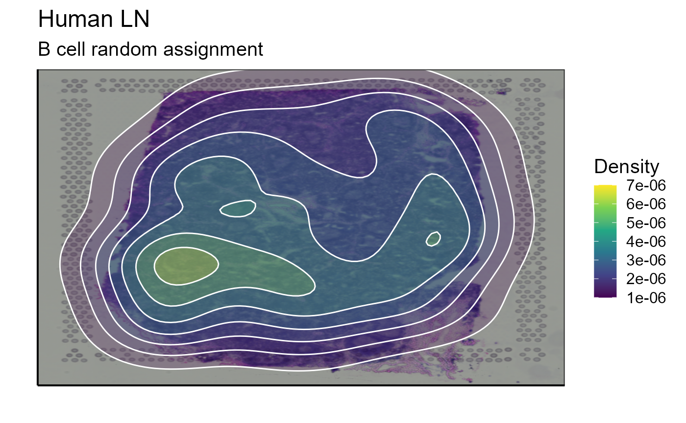
#2)Density
vgm_with_simulated_VDJ$VDJ<-density_BCR_assignment
top_5_VDJ_BCR_density_data<-Spatial_selection_expanded_clonotypes(nb_clonotype = 5, vgm_VDJ = vgm_with_simulated_VDJ$VDJ)
#clonotypes
p_spatial_BCR_density_clonotype<-Spatial_VDJ_plot(vgm_VDJ = top_5_VDJ_BCR_density_data,analysis = top_5_VDJ_BCR_density_data$clonotype_id, images_tibble = scaling_parameters[[5]], bcs_merge = scaling_parameters[[10]],sample_names = sample_names, title = "B cell density assignment", legend = "Clonotype")
p_spatial_BCR_density_clonotype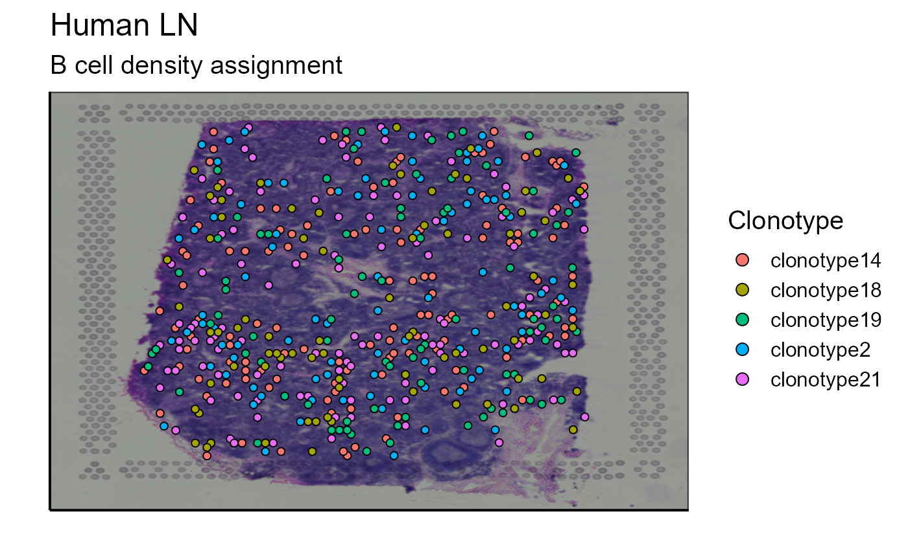
#Density of most expanded clone
top_1_VDJ_BCR_density_data<-Spatial_selection_expanded_clonotypes(nb_clonotype = 1, vgm_VDJ = vgm_with_simulated_VDJ$VDJ)
p_spatial_BCR_density_clonotype_density<-Spatial_density_plot(vgm_VDJ = top_1_VDJ_BCR_density_data, images_tibble = scaling_parameters[[5]], bcs_merge = scaling_parameters[[10]],sample_names = sample_names, title = "B cell density assignment")
p_spatial_BCR_density_clonotype_density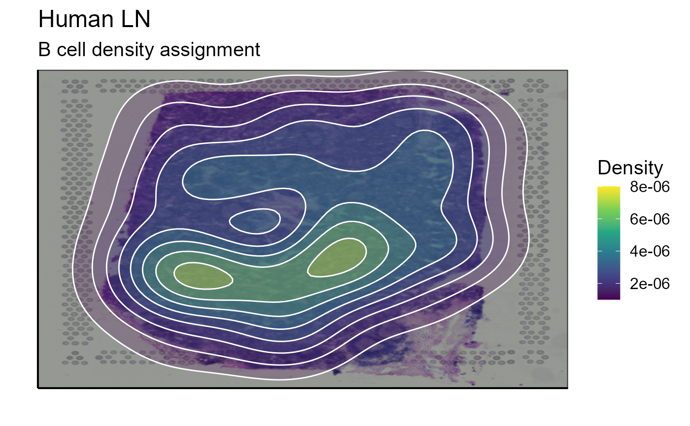
#3)Germline
vgm_with_simulated_VDJ$VDJ<-germline_BCR_assignment
top_5_VDJ_BCR_germline_data<-Spatial_selection_expanded_clonotypes(nb_clonotype = 5, vgm_VDJ = vgm_with_simulated_VDJ$VDJ)
#clonotypes
p_spatial_BCR_germline_clonotype<-Spatial_VDJ_plot(vgm_VDJ = top_5_VDJ_BCR_germline_data,analysis = top_5_VDJ_BCR_germline_data$clonotype_id, images_tibble = scaling_parameters[[5]], bcs_merge = scaling_parameters[[10]],sample_names = sample_names, title = "B cell germline assignment", legend = "Clonotype")
p_spatial_BCR_germline_clonotype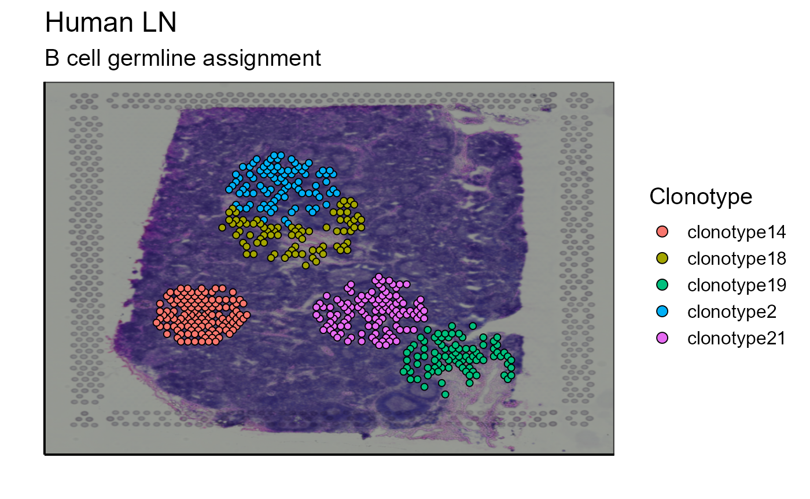
#Density of most expanded clone
top_1_VDJ_BCR_germline_data<-Spatial_selection_expanded_clonotypes(nb_clonotype = 1, vgm_VDJ = vgm_with_simulated_VDJ$VDJ)
p_spatial_BCR_germline_clonotype_density<-Spatial_density_plot(vgm_VDJ = top_1_VDJ_BCR_germline_data, images_tibble = scaling_parameters[[5]], bcs_merge = scaling_parameters[[10]],sample_names = sample_names, title = "B cell germline assignment")
p_spatial_BCR_germline_clonotype_density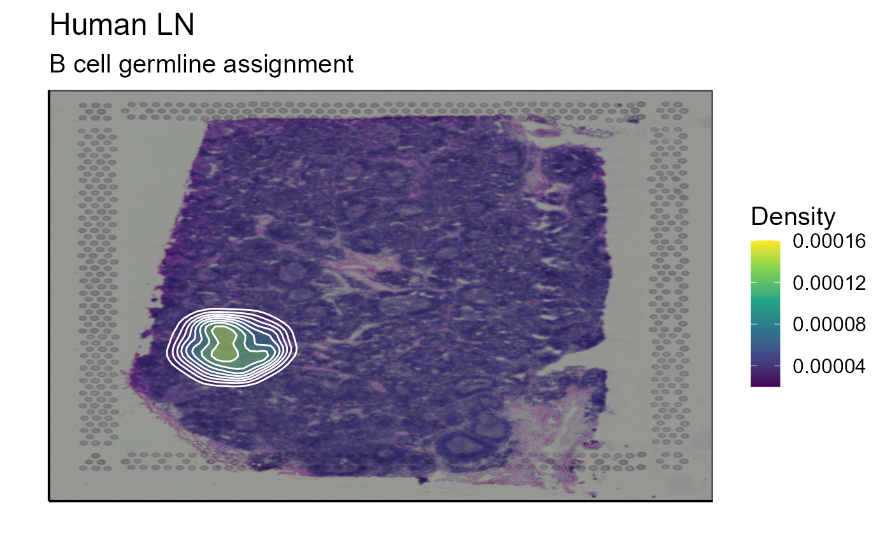
7.3 Analysis
We have now a VGM containing transcriptomic information and B cell receptor sequences. The same functions can be used for real experimental data. We already have visualized repertoire features, such as clonotype, isotype, somatic hypermutation, clonal evolution, single or module gene expression, in addition to transcriptional clusters. For the next plots we decided to only use the germline-based assignment of the simulated BCR sequences but the analysis pipeline would work with any assignment method or experimental data.
7.3.1 VDJ analysis
As with analyses of the experimental immune repertoire sequencing data, we start the analysis of the simulated VDJ information. To simplify the analysis, we only consider germline-based assignment. To be able to use the AntibodyForest function and visualize SHMs as well as track the evolution of a clonotype, we need to modify the simulated VDJ. AntibodyForest is based on trimmed sequences but Echidna does not generate them. However, the raw sequences simulated by Echidna can be used instead, given these span framework1 to framework4 (and are already “trimmed”).
#1)Isotpye
Spatial_VDJ_plot(vgm_VDJ = top_5_VDJ_BCR_germline_data,analysis = top_5_VDJ_BCR_germline_data$VDJ_cgene, images_tibble = scaling_parameters[[5]], bcs_merge = scaling_parameters[[10]],sample_names = sample_names, title = "B cell germline assignment", legend = "Isotype")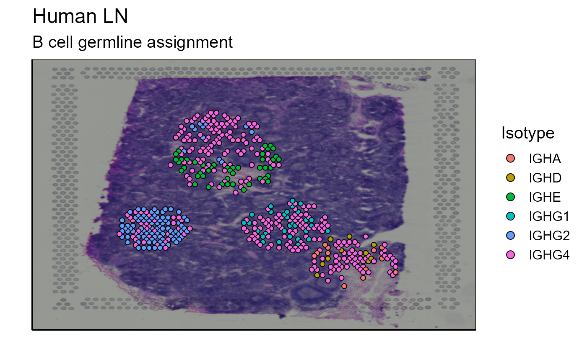
vgm_with_simulated_VDJ$VDJ<-density_BCR_assignment
#2)Nb SHM
Spatial_nb_SHM_compare_to_germline_plot(simulation = TRUE, vgm_VDJ =vgm_with_simulated_VDJ$VDJ,nb_clonotype = 3, simulated_VDJ = simulated_B_cells_VDJ,bcs_merge = scaling_parameters[[10]],images_tibble = scaling_parameters[[5]],sample_names = sample_names,title = "B cells", legend_title = "nb SHM")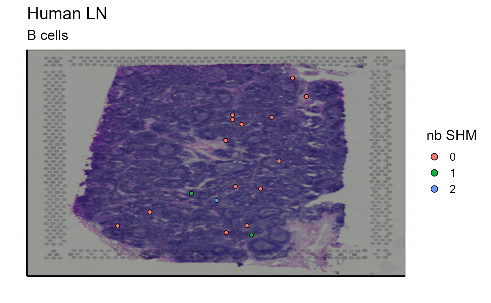
#3) Clonotype tracking
igraph::plot.igraph(simulated_B_cells_VDJ$igraph_list_trans[[3]])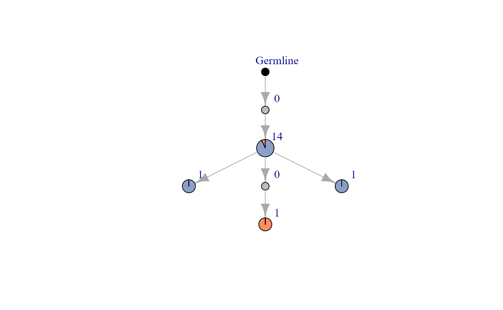
igraph::plot.igraph(simulated_B_cells_VDJ$igraph_list_trans[[46]])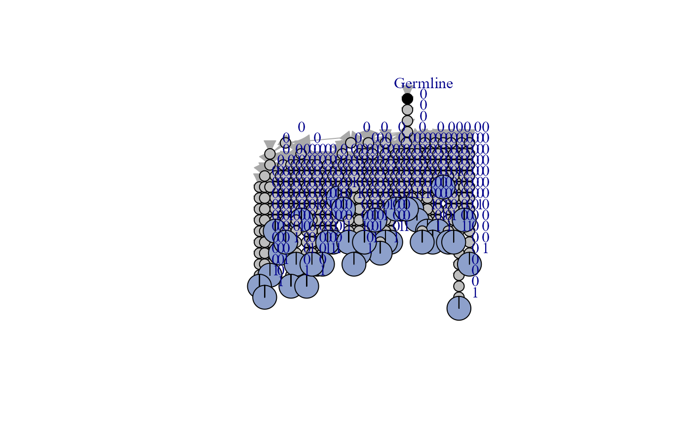
Spatial_evolution_of_clonotype_plot(simulation = TRUE,tracking_type = "all",nb_clonotype = 3 ,simulated_VDJ = simulated_B_cells_VDJ,VDJ =vgm_with_simulated_VDJ$VDJ,bcs_merge = bcs_merge,images_tibble = scaling_parameters[[5]],title = "B cell density", legend_title = "nb_of_SHM",sample_names=sample_names)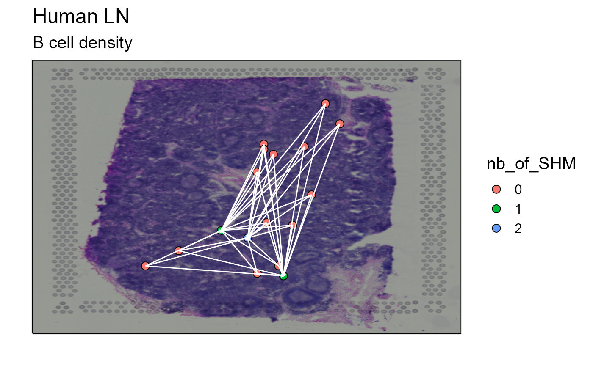
Spatial_evolution_of_clonotype_plot(simulation = TRUE,tracking_type = "closest",nb_clonotype = 3 ,simulated_VDJ = simulated_B_cells_VDJ,VDJ =vgm_with_simulated_VDJ$VDJ,bcs_merge = bcs_merge,images_tibble = scaling_parameters[[5]],title = "B cell density", legend_title = "nb_of_SHM",sample_names=sample_names)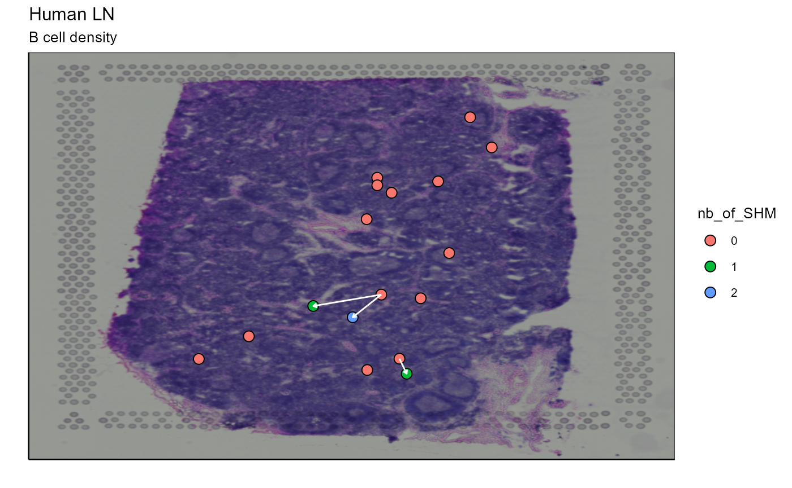
#Top expanded clone
Spatial_evolution_of_clonotype_plot(simulation = TRUE,tracking_type = "all",nb_clonotype = 46 ,simulated_VDJ = simulated_B_cells_VDJ,VDJ =vgm_with_simulated_VDJ$VDJ,bcs_merge = bcs_merge,images_tibble = scaling_parameters[[5]],title = "B cell density", legend_title = "nb_of_SHM",sample_names=sample_names)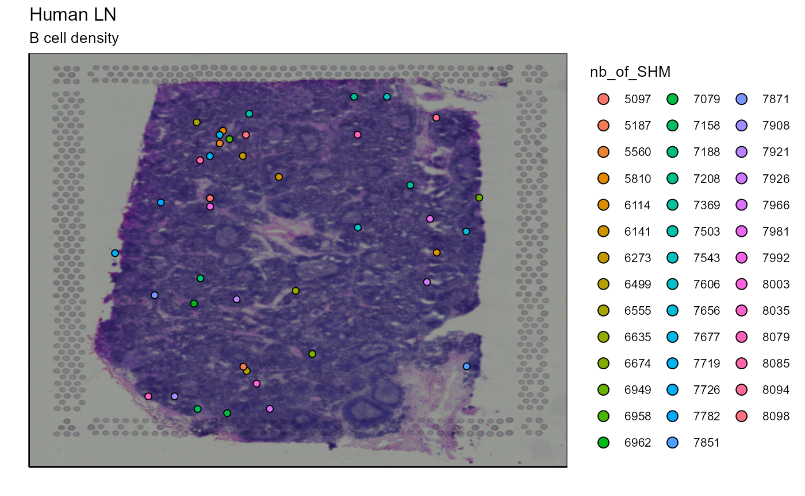
Spatial_evolution_of_clonotype_plot(simulation = TRUE,tracking_type = "closest",nb_clonotype = 46 ,simulated_VDJ = simulated_B_cells_VDJ,VDJ =vgm_with_simulated_VDJ$VDJ,bcs_merge = bcs_merge,images_tibble = scaling_parameters[[5]],title = "B cell density", legend_title = "nb_of_SHM",sample_names=sample_names)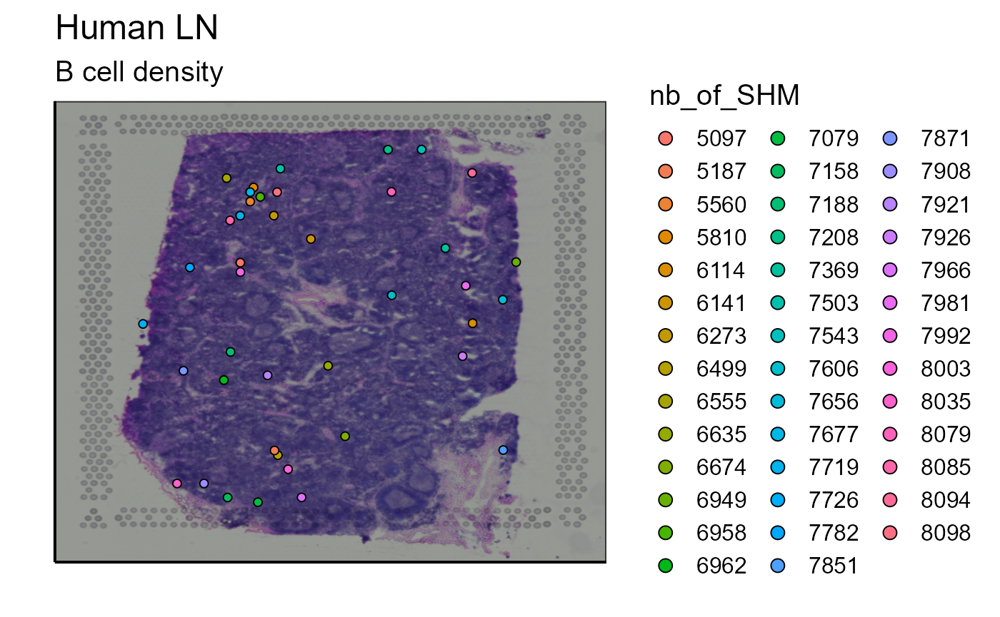
7.3.2 GEX analysis
We can also display the transcriptome information for the spatial VGM
#4) Celltype B and T cells
p_spatial_T_and_B_celltype<-Spatial_celltype_plot(bcs_merge = scaling_parameters[[10]],vgm_GEX = vgm_with_simulated_VDJ$GEX@meta.data,images_tibble = scaling_parameters[[5]],sample_names = sample_names,title="B and T celltype", legend_title = "Celltype")
p_spatial_T_and_B_celltype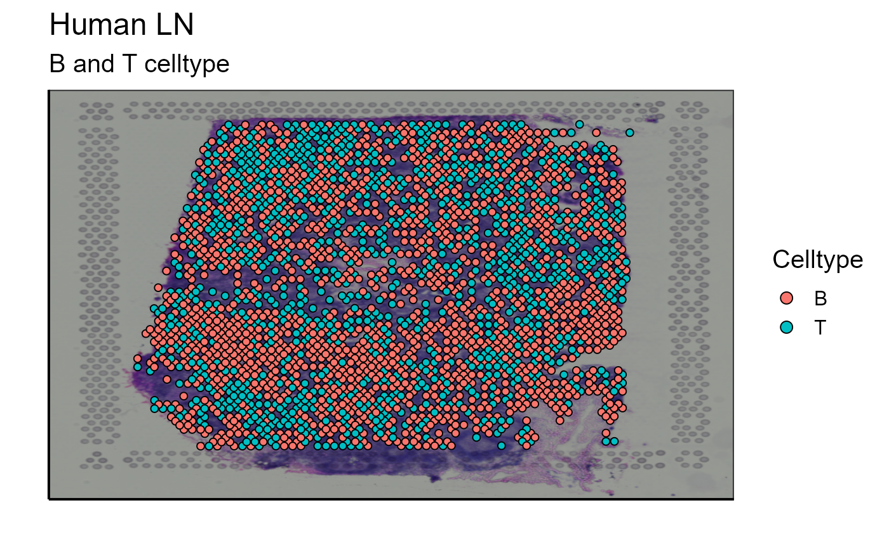
#4.1)B cells and density
B_celltype<-Spatial_celltype_plot(bcs_merge = scaling_parameters[[10]],vgm_GEX = vgm_with_simulated_VDJ$GEX@meta.data,images_tibble = scaling_parameters[[5]],sample_names = sample_names,title="B celltype", legend_title = "Celltype", specific_celltype = "B", density = TRUE)
p_B_celltype<-B_celltype[[1]]
p_B_celltype_density<-B_celltype[[2]]
p_B_celltype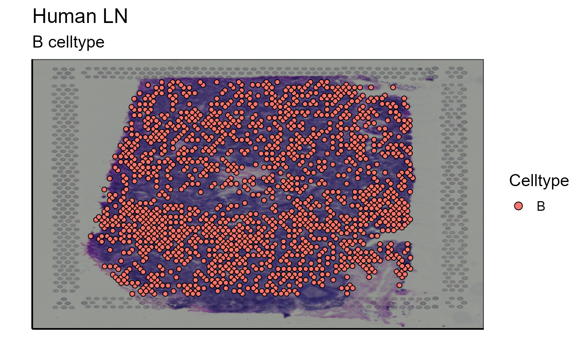
p_B_celltype_density
#5)Single gene expression
GEX_BCR_barcode<-vgm_with_simulated_VDJ$VDJ$GEX_barcode
GEX_BCR_barcode<-paste0(GEX_BCR_barcode,"-1") #Add -1 at the end of each barcode
Spatial_marker_expression(matrix=scaling_parameters[[9]], marker="CD3E",bcs_merge=scaling_parameters[[10]],images_tibble=scaling_parameters[[5]],GEX_barcode=GEX_BCR_barcode,sample_names=sample_names, title = "B cells", threshold = "No")## New names:
## • `` -> `...13`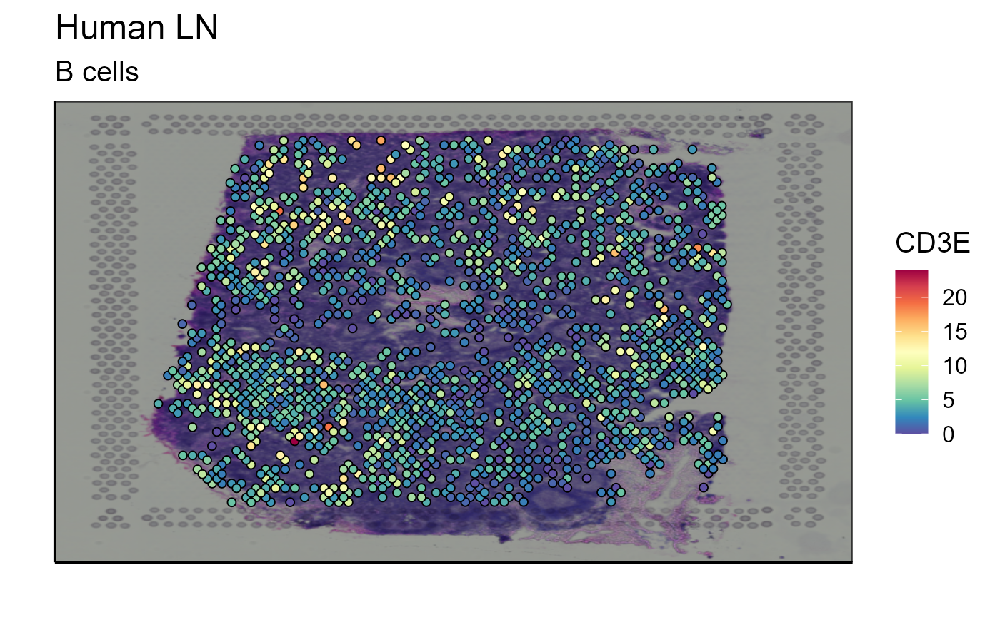
#Spatial_marker_expression(matrix=scaling_parameters[[9]], marker="CD3E",bcs_merge=scaling_parameters[[10]],images_tibble=scaling_parameters[[5]],GEX_barcode=GEX_BCR_barcode,sample_names=sample_names, title = "B cells", threshold = 5)
#6)Gene module expression
gene.set <- list() # make empty list
gene.set[[1]] <- c("CD19","XBP1","SDC1") # put gene set in list
Spatial_module_expression(sample_names = sample_names,gene.set = gene.set, GEX.out.directory.list = GEX.out.directory.list[[1]],bcs_merge = scaling_parameters[[10]],images_tibble = scaling_parameters[[5]], threshold = "No")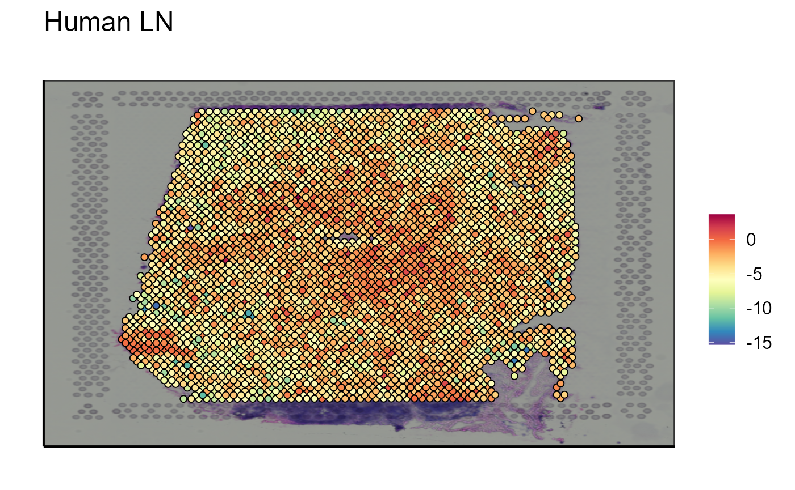
Spatial_module_expression(sample_names = sample_names,gene.set = gene.set, GEX.out.directory.list = GEX.out.directory.list[[1]],bcs_merge = scaling_parameters[[10]],images_tibble = scaling_parameters[[5]], threshold = 1)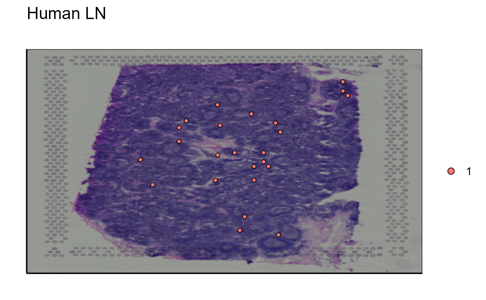
#7) Clustering
germline_BCR_assignment$barcode<-germline_BCR_assignment$GEX_barcode
vgm_with_simulated_VDJ$VDJ<-germline_BCR_assignment
#Old GEX clusters given by 10X
GEX_cluster_B_cells<-Spatial_cluster(cluster = "GEX_cluster", vgm_cluster = vgm_with_simulated_VDJ$spatial$cluster[[1]], vgm_VDJ = vgm_with_simulated_VDJ$VDJ, GEX.out.directory.list = GEX.out.directory.list[[1]],images_tibble=scaling_parameters[[5]],bcs_merge=scaling_parameters[[10]], title = "B cells", sample_names = sample_names, legend_title = "GEX clusters" )
GEX_cluster_B_cells[[1]]
#Reclustering with only B cells
reclustering_B_cells<-Spatial_cluster(cluster = "reclustering", vgm_VDJ = vgm_with_simulated_VDJ$VDJ, GEX.out.directory.list = GEX.out.directory.list[[1]],images_tibble=scaling_parameters[[5]],bcs_merge=scaling_parameters[[10]], title = "B cells", sample_names = sample_names, legend_title = "Reclustering")## Centering and scaling data matrix
## PC_ 1
## Positive: HMGN2, CR2, CLU, HMGB2, ELL3, PFN1, SERPINE2, RGS13, ACTG1, FDCSP
## SERF2, TUBA1B, TUBB, STMN1, SERPINA9, LRMP, MEF2B, FCAMR, H3F3A, HMGB1
## H2AFZ, HMGN1, MARCKSL1, PPIA, HMCES, CFL1, PTTG1, VPREB3, RFTN1, SUGCT
## Negative: IGKC, IGHG1, IGHG4, IGHG2, IGHG3, CCL2, IGLC2, IGHA1, SSR4, C7
## XBP1, IGHGP, NR4A1, C1QA, CCL21, CST3, IGLC1, JCHAIN, SOCS3, THBS1
## C11orf96, IGLC3, CCN1, DUSP1, GAS6, HSP90B1, CXCL12, STAB1, EGFL7, IFITM3
## PC_ 2
## Positive: TRAC, TRBC2, TRBC1, TCF7, LINC00861, LDLRAP1, IL7R, CD3E, CCL21, LAT
## CD6, ZAP70, TNFRSF25, CCR7, CD3D, CD247, CHRM3-AS2, LEF1, GIMAP7, PIK3IP1
## XBP1, AQP3, ITK, IL32, CD5, PRKCQ-AS1, MZB1, GIMAP5, CD2, PIM2
## Negative: VIM, IGFBP7, SERPINE1, CCL20, TIMP1, CEMIP, CHI3L1, SOD2, TNC, THY1
## TIMP3, CLDN5, THBD, CSF2RB, STAB1, CXCL5, MT-CO1, PTGDS, SPARC, GRN
## CXCL2, FUCA1, MARCKS, IGFBP4, PDLIM1, LMNA, LYZ, TFPI, FN1, MT-CO2
## PC_ 3
## Positive: TRBC2, TRBC1, CCL19, TRAC, IL32, CCR7, IL7R, TCF7, LAMP3, CD3D
## CD7, C3, STAT1, CCL21, CD6, GIMAP7, PIK3IP1, IFITM1, CD247, LINC00861
## CD2, CD3E, LAT, CXCL9, SPOCK2, LEF1, CTLA4, GIMAP5, RGS1, FSCN1
## Negative: IGHG4, IGKC, IGHG1, IGLC2, MZB1, IGHG3, IGHG2, IGHGP, IGLC1, JCHAIN
## XBP1, IGLC3, SSR4, IGHM, BTG2, TXNDC5, DERL3, TENT5C, HERPUD1, POU2AF1
## GAS6, TCL1A, IGHA1, CXCL12, FKBP11, SEL1L3, CD79A, PRDX4, AC012236.1, SOCS3
## PC_ 4
## Positive: CXCL13, MS4A1, FDCSP, FCER2, CD79A, CD22, TNFRSF13C, BANK1, IGHD, HLA-DQA1
## CD79B, CD83, CR2, VPREB3, TLR10, CXCR5, SELE, CCL20, CD1C, LTF
## MT-ND4, SPIB, FCRLA, CD24, PAX5, SMIM14, MT-ATP6, MT-CYB, MT-ND1, C3
## Negative: C1QB, C1QC, CST3, CCL21, SELENOP, C1QA, CCL2, CCL14, SLC40A1, CEBPD
## LGMN, JCHAIN, TUBA1B, SIGLEC1, APOE, CD209, RRM2, CXCL12, S100A10, GAPDH
## SDC3, CCL18, TYROBP, FCER1G, HSP90B1, CCN1, PLK1, UBE2S, MS4A6A, IL7R
## PC_ 5
## Positive: SFRP2, MYL9, CNN1, ACTA2, ACTG2, FBLN1, TAGLN, MYH11, CCDC80, MGP
## SFRP4, SFRP1, DES, ADIRF, SOD3, APOD, HSPB6, MT-ND3, MT-CYB, BGN
## COL1A2, MT-ATP6, MUSTN1, WFDC1, MT-CO3, FLNC, COL1A1, MT-ND4, CAVIN3, PLA2G2A
## Negative: CLEC4M, CEMIP, MARCO, CD209, CLEC4G, SIGLEC1, MMP9, ICAM1, SOD2, LYVE1
## LYZ, IL1B, EGFL7, CETP, IFI30, STAB1, LPL, STAB2, APOE, PLAUR
## CCL14, LGMN, NR1H3, CFP, NAMPT, GZMB, NCEH1, ADAMTS4, CSF1R, SPHK1
## Computing nearest neighbor graph
## Computing SNN## Modularity Optimizer version 1.3.0 by Ludo Waltman and Nees Jan van Eck
##
## Number of nodes: 1645
## Number of edges: 53917
##
## Running Louvain algorithm...
## Maximum modularity in 10 random starts: 0.7303
## Number of communities: 11
## Elapsed time: 1 seconds
reclustering_B_cells[[1]]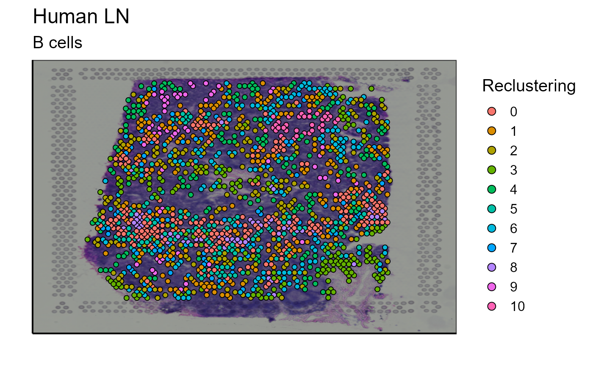
#Reclustering of the top 5 more expanded clones
top_5_VDJ_BCR_germline_data<-Spatial_selection_expanded_clonotypes(nb_clonotype = 5, vgm_VDJ = vgm_with_simulated_VDJ$VDJ)
a<-select(top_5_VDJ_BCR_germline_data, orig_barcode, x, y)
b<-select(reclustering_B_cells[[2]], Cluster, orig_barcode)
top_5_VDJ_BCR_germline_data_cluster<-merge(a,b, by = "orig_barcode")
Spatial_VDJ_plot(vgm_VDJ = top_5_VDJ_BCR_germline_data_cluster,analysis = top_5_VDJ_BCR_germline_data_cluster$Cluster, images_tibble = scaling_parameters[[5]], bcs_merge = scaling_parameters[[10]],sample_names = sample_names, title = "B cell germline assignment", legend = "Reclustering")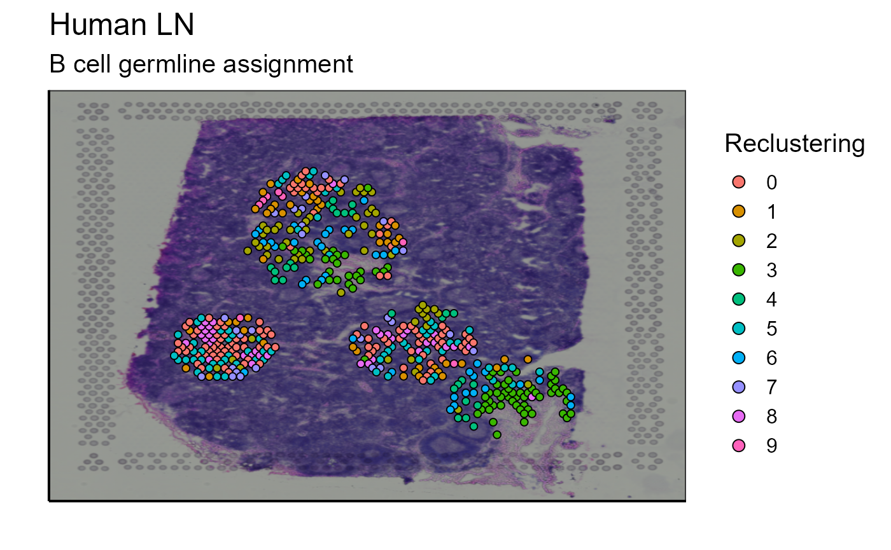
8 Version information
## R version 4.2.1 (2022-06-23 ucrt)
## Platform: x86_64-w64-mingw32/x64 (64-bit)
## Running under: Windows 10 x64 (build 19044)
##
## Matrix products: default
##
## locale:
## [1] LC_COLLATE=German_Germany.utf8 LC_CTYPE=German_Germany.utf8
## [3] LC_MONETARY=German_Germany.utf8 LC_NUMERIC=C
## [5] LC_TIME=German_Germany.utf8
##
## attached base packages:
## [1] stats graphics grDevices utils datasets methods base
##
## other attached packages:
## [1] dplyr_1.0.9 Platypus_3.4.1
##
## loaded via a namespace (and not attached):
## [1] systemfonts_1.0.4 plyr_1.8.7 igraph_1.3.4
## [4] lazyeval_0.2.2 sp_1.5-0 splines_4.2.1
## [7] listenv_0.8.0 scattermore_0.8 ggplot2_3.3.6
## [10] digest_0.6.29 useful_1.2.6 foreach_1.5.2
## [13] yulab.utils_0.0.5 htmltools_0.5.3 tiff_0.1-11
## [16] fansi_1.0.3 magrittr_2.0.3 memoise_2.0.1
## [19] tensor_1.5 cluster_2.1.3 ROCR_1.0-11
## [22] globals_0.15.1 matrixStats_0.62.0 pkgdown_2.0.6
## [25] spatstat.sparse_2.1-1 jpeg_0.1-9 colorspace_2.0-3
## [28] ggrepel_0.9.1 textshaping_0.3.6 xfun_0.31
## [31] crayon_1.5.1 jsonlite_1.8.0 progressr_0.10.1
## [34] spatstat.data_2.2-0 survival_3.3-1 zoo_1.8-10
## [37] iterators_1.0.14 ape_5.6-2 glue_1.6.2
## [40] polyclip_1.10-0 gtable_0.3.0 seqinr_4.2-16
## [43] leiden_0.4.2 future.apply_1.9.0 abind_1.4-5
## [46] scales_1.2.0 DBI_1.1.3 spatstat.random_2.2-0
## [49] miniUI_0.1.1.1 Rcpp_1.0.9 isoband_0.2.5
## [52] viridisLite_0.4.0 xtable_1.8-4 gridGraphics_0.5-1
## [55] tidytree_0.3.9 reticulate_1.25 spatstat.core_2.4-4
## [58] bit_4.0.4 htmlwidgets_1.5.4 httr_1.4.3
## [61] RColorBrewer_1.1-3 ellipsis_0.3.2 Seurat_4.1.1
## [64] ica_1.0-3 farver_2.1.1 pkgconfig_2.0.3
## [67] sass_0.4.2 uwot_0.1.11 deldir_1.0-6
## [70] utf8_1.2.2 labeling_0.4.2 ggplotify_0.1.0
## [73] tidyselect_1.1.2 rlang_1.0.4 reshape2_1.4.4
## [76] later_1.3.0 munsell_0.5.0 tools_4.2.1
## [79] cachem_1.0.6 cli_3.3.0 generics_0.1.3
## [82] ade4_1.7-19 ggridges_0.5.3 evaluate_0.15
## [85] stringr_1.4.0 fastmap_1.1.0 yaml_2.3.5
## [88] ragg_1.2.2 goftest_1.2-3 ggtree_3.4.1
## [91] bit64_4.0.5 knitr_1.39 fs_1.5.2
## [94] fitdistrplus_1.1-8 purrr_0.3.4 RANN_2.6.1
## [97] readbitmap_0.1.5 pbapply_1.5-0 future_1.27.0
## [100] nlme_3.1-157 mime_0.12 aplot_0.1.6
## [103] hdf5r_1.3.5 compiler_4.2.1 rstudioapi_0.13
## [106] plotly_4.10.0 png_0.1-7 spatstat.utils_2.3-1
## [109] treeio_1.20.1 tibble_3.1.8 bslib_0.4.0
## [112] stringi_1.7.8 highr_0.9 RSpectra_0.16-1
## [115] desc_1.4.1 rgeos_0.5-9 lattice_0.20-45
## [118] Matrix_1.4-1 vctrs_0.4.1 stringdist_0.9.8
## [121] pillar_1.8.0 lifecycle_1.0.1 spatstat.geom_2.4-0
## [124] lmtest_0.9-40 jquerylib_0.1.4 RcppAnnoy_0.0.19
## [127] data.table_1.14.2 cowplot_1.1.1 irlba_2.3.5
## [130] httpuv_1.6.5 patchwork_1.1.1 R6_2.5.1
## [133] promises_1.2.0.1 bmp_0.3 KernSmooth_2.23-20
## [136] gridExtra_2.3 parallelly_1.32.1 codetools_0.2-18
## [139] MASS_7.3-57 assertthat_0.2.1 rprojroot_2.0.3
## [142] SeuratObject_4.1.0 sctransform_0.3.3 mgcv_1.8-40
## [145] parallel_4.2.1 grid_4.2.1 rpart_4.1.16
## [148] ggfun_0.0.6 tidyr_1.2.0 rmarkdown_2.14
## [151] Rtsne_0.16 shiny_1.7.2